ABOUT FLOS
目录
01 开篇
Arco 落地灯的底座是一块白色 Carrara 大理石，重约 65 公斤，边角做了斜切倒角。在它的重心位置，钻着一个贯穿整块石头的圆孔。这个孔不是装饰：搬灯的时候，找一根扫帚柄粗细的木杆穿进去，两个人抬着杆子，就能把这块配重连同整盏灯一起抬走。1962 年设计这盏灯的 Achille 与 Pier Giacomo Castiglioni 兄弟，连 "怎么搬动它" 都替用户想好了。
这块大理石压住的是一根横跨约两米的不锈钢伸缩拱臂，灯头悬在餐桌正上方。兄弟俩的出发点是把街道上的路灯搬进客厅：想要一盏吊灯照住餐桌中央，又不愿在已经封好的天花板上开洞走线，那就让配重和电源全部留在地面上。纽约现代艺术博物馆（MoMA）1997 年 Castiglioni 回顾展的图录里写得很直接："一盏街灯是 Arco 的跳板，这是一盏不需要在天花板上打洞的吊灯。"
另一个失败被绕过去的故事发生在 Taccia 上。1958 年的原型用塑料做反射碗，白炽灯一点亮，热量把塑料烤得流淌变形，兄弟俩只好改用穆拉诺手工吹制玻璃；直到半个世纪后 LED 普及，FLOS 才推出 PMMA 亚克力碗版本，实现了他们当年 "用塑料" 的初衷。
这两个细节几乎是 FLOS 全部方法论的缩影：从日常物里借来一个形（街灯、汽车大灯、漫画里的狗鼻子），用一个看似玩笑的动作解决一个具体问题，再用意大利的大理石、吹制玻璃与金属工艺把它变成可以连续生产六十年的物件。本报告要回答的问题是：这种语言为什么有效，谁在为它付费，以及当 LED、地产下行和集团资本同时到来时，它还能不能继续有效。
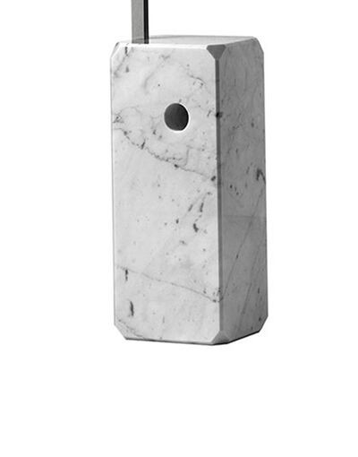
图：Arco 白色 Carrara 大理石底座重心处的贯穿圆孔，搬运时穿入木杆由两人抬走。图源：FLOS 官网 Arco 产品页。
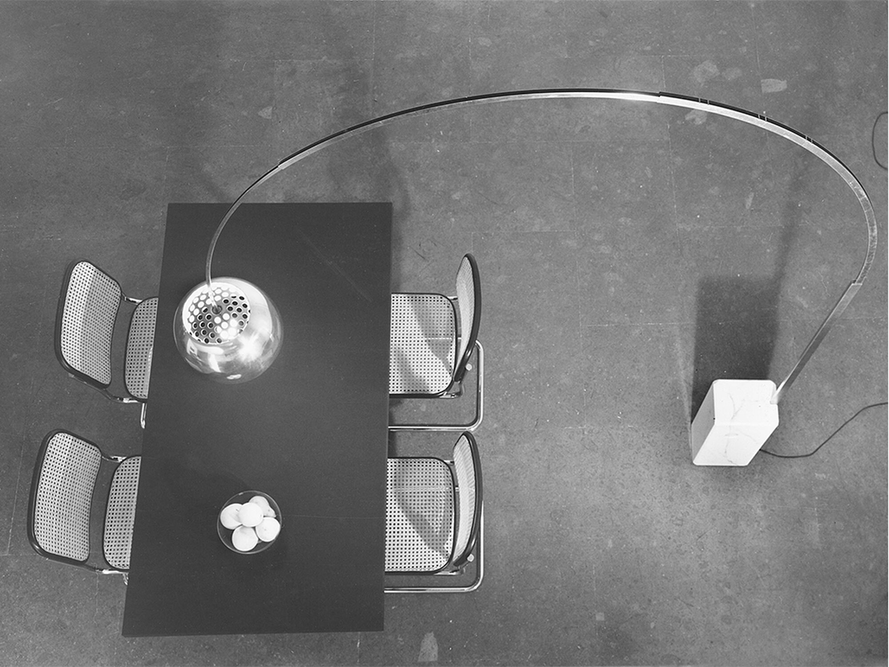
图：Arco 不锈钢拱臂把光源从地面配重送到餐桌正上方，替代了需要在天花板走线的吊灯。图源：FLOS 官网 Arco 设计故事页。
02 品牌概述
FLOS 是 1962 年创立于意大利梅拉诺（Merano）的设计师照明品牌，现属 Flos B&B Italia Group。它以 Castiglioni 兄弟的现代经典灯具和 Starck、Morrison、Grcic、Anastassiades 等跨代际设计师的当代产品闻名，业务覆盖装饰灯、建筑照明、户外照明与项目定制四个事业部，在全球 130 多个国家销售。品牌的核心不是某种光源技术，而是一张持续六十年的设计师合作网络，以及 "经典款永不下架、持续迭代光源" 的长目录经营方式。
| 项目 | 内容 |
|---|---|
| 品牌名 | FLOS（拉丁语 "花"，由 Pier Giacomo Castiglioni 命名）・https://www.flos.com |
| 国家 / 地区 | 意大利（1962 年创立于南蒂罗尔 Merano；装饰线总部 Bovezzo，Brescia；建筑线总部 Valencia，西班牙） |
| 成立时间 | 1962 年（Merano）；1964 年迁至 Brescia 省 Nave，后迁 Bovezzo |
| 创始人 | Dino Gavina 与 Cesare Cassina，联合 Merano 本地制造商 Arturo Eisenkeil |
| 代表性设计人物 | Achille 与 Pier Giacomo Castiglioni（Arco、Taccia、Toio、Snoopy、Parentesi、cocoon 系列）；Tobia Scarpa；Philippe Starck、Jasper Morrison、Konstantin Grcic、Michael Anastassiades、Marcel Wanders、Formafantasma、Vincent Van Duysen |
| 其他关键人物 | Sergio Gandini（1963 年起管理、1965–1999 任董事长）；Piero Gandini（1996–2019 任董事长）；Roberta Silva（2019 年起 CEO）；Barbara Corti（2023 年起首席创意官） |
| 官方理念 | "There is no contradiction between the business project and creative imagination"（商业计划与创意想象并不矛盾）；集团 purpose："We design for a beautiful life" |
| 品牌归属 | Flos B&B Italia Group S.p.A.（2018 年 11 月由 Investindustrial 与 Carlyle 合资组建，原名 Design Holding，2024 年 5 月更名） |
| 核心业务 | 装饰性设计师灯具（Decorative）、建筑照明（Architectural）、户外照明（Outdoor）、项目定制（Bespoke/Custom） |
| 经典产品 | Arco（1962）、Taccia（1962）、Toio（1962）、Snoopy（1967）、Parentesi（1971）、cocoon 系列（Viscontea、Taraxacum、Gatto，1960）、Splügen Bräu（1961）、Glo-Ball（1998）、Mayday（2000）、IC Lights（2014）、String Light（2014）、Noctambule（2019）、Infra-Structure（2020） |
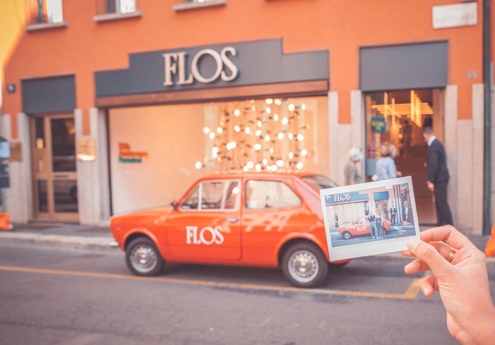
图：米兰 Corso Monforte 9 号 FLOS 旗舰店门脸，建筑由 Luigi Caccia Dominioni 于 1963–1966 年建造，1968 年 FLOS 在此开出单品牌店，首个橱窗由 Achille Castiglioni 设计。图源：FLOS 官方品牌历史页。
03 Brand 品牌：从一团喷涂树脂到光的文化集团
1962 年 Merano：一团树脂和三个合伙人
FLOS 的起点不是一家灯具厂，而是一种材料。1959 年，南蒂罗尔 Merano 的进口商 Arturo Eisenkeil 正在为一种从美国引进的喷涂式塑料涂层寻找用途 ——FLOS 官方文件对 cocoon 的描述始终是 "spray-on plastic coating produced in the United States"（美国产喷涂式塑料涂层），把它喷在金属网架上，干燥后会形成一层半透明、雾状的茧壳。需要说明的是，流传于部分二手媒体的 "cocoon 源自 NASA 或美国航天项目" 说法，在 FLOS 官方、集团可持续报告与学术资料中均无任何证据，本报告不予采信。
术语注释：cocoon—— 在金属骨架上反复喷涂合成树脂、干燥后形成的茧状半透明漫射层，FLOS 的初代招牌工艺。
Eisenkeil 找到了博洛尼亚家具出版商 Dino Gavina 和 Meda 家具家族的 Cesare Cassina。1962 年，三人在 Merano 成立 FLOS。Investindustrial 托管的 FLOS 2015 可持续报告给出了最干净的官方表述："1962 — Flos is founded in Merano by Dino Gavina and Cesare Cassina with Arturo Eisenkeil." 品牌名 FLOS 是拉丁语 "花"，官方历史页明确记录命名人是 Pier Giacomo Castiglioni。在公司成立之前，Castiglioni 兄弟与 Tobia Scarpa 已经用 cocoon 做出了 Taraxacum 和 Fantasma 等原型 ——FLOS 不是先有公司再找设计，而是为了把这批激进原型产业化而成立的公司。
1962 年还有一张常被引用的照片：Achille、Pier Giacomo Castiglioni 与当时已定居美国的 Marcel Breuer 围在 cocoon 灯旁。Gavina 此前已从 Breuer 手中取得 Wassily、Cesca 等椅子的版权，这张照片是 FLOS 早期 "设计权贵网络" 的视觉证据。
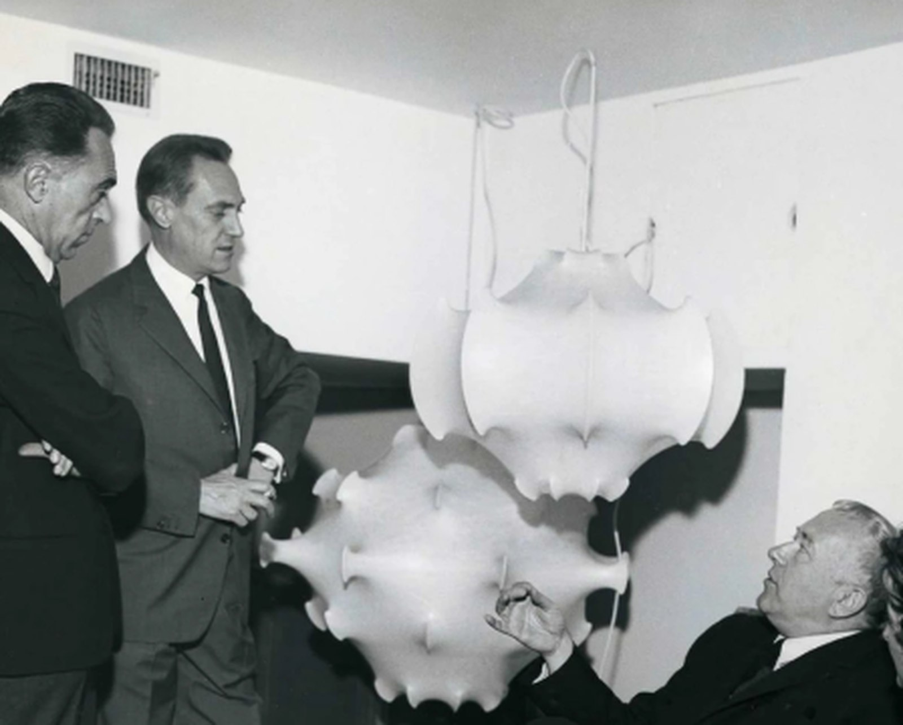
图：1962 年，Achille 与 Pier Giacomo Castiglioni 向 Marcel Breuer 展示 cocoon 灯具。图源：FLOS 官方 1960 哲学页。
Castiglioni 兄弟：先有合作，后有公司
FLOS 的初代设计师网络不是招募来的，而是从 Gavina 既有合作名单平移过来的。Achille（1918–2002）与 Pier Giacomo（1913–1968）Castiglioni 兄弟在米兰的工作室，以及 Afra 与 Tobia Scarpa 夫妇，此前已在为 Gavina 的家具公司做设计。1962 年 Gavina 决定 "也该做新灯具" 时，直接把这批人带进了 FLOS。
兄弟俩的方法论被称为现成品（ready-made，意大利语 oggetto trovato）再发现：不从白纸开始画灯，而是先观察工业产品、街头物和漫画，把已有的东西借过来当灯。Toio 直接装上一只汽车前大灯，电源线用钓鱼竿导线环引导，线尾用船用系缆羊角收卷；Snoopy 的名字与造型借自 Charles Schulz 的漫画；Arco 借的是街灯的悬臂逻辑。这套方法后来成为 FLOS 产品语言的底色，也定义了品牌与设计师之间的关系 —— 设计师负责观察与冒犯，公司负责把原型变成能在 Bovezzo 生产线上连续下线的商品。
Achille 女儿 Giovanna Castiglioni 在 2026 年 Eames Institute 的口述中这样概括父亲："我父亲总说，' 如果你不好奇，那就别干了。'……Achille 设计的每一件东西里都有一个理由，而有了理由，你就赢了。"
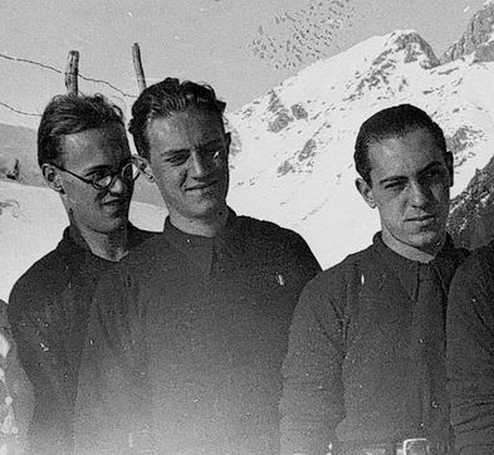
图：Castiglioni 兄弟年轻时期的合影。Achille 与 Pier Giacomo 自 1940 年代起在米兰共用工作室，是 FLOS 初代产品的设计者。图源：FLOS 官网 Castiglioni 设计师页。
Gandini 时代：迁厂 Bovezzo 与 Arteluce 并入
1963 年，Brescia 企业家 Sergio Gandini 开始管理 FLOS；1964 年公司从 Merano 迁到 Brescia 省，先落脚 Nave；1965 年 Sergio Gandini 正式出任董事长，此后任职至 1999 年。官方历史页 1972 年章节已经出现 Bovezzo 新厂的配图，工厂随后定址 Bovezzo（Via Angelo Faini 2）至今。意大利照明工业协会 ASSIL 的表述是 "1964 年 Gandini 家族接管领导权并将总部迁至 Brescia 地区"。Gavina 与 Cassina 本人退出 FLOS 的具体年份与股权对价，官方没有直接记载；可查证的旁证是 Gavina 自己的家具公司 1968 年破产、被 Knoll 收购。写作时只能说：原创始人在 1960 年代中期退场，Gandini 家族成为主导者。
第二笔重要的资产并入是 Arteluce。Gino Sarfatti 1939 年在米兰创立 Arteluce，是意大利现代照明的先驱（1953 年 Marco Zanuso 设计的 Via della Spiga 门店曾是国际设计地标）。FLOS 官方设计师页写 Sarfatti 1973 年决定把 Arteluce 卖给 FLOS 并退休到科莫湖畔；另一份官方安装说明则写 "1974 年 FLOS 成为 Arteluce 的所有者"。两种口径并不矛盾：1973 年末签约出售，1974 年完成产权交接。Arteluce 的 2097 吊灯、1063、600 等型号此后以 FLOS 名义再版，近年 FLOS 还与 Sarfatti 之孙合作推出胶囊系列。
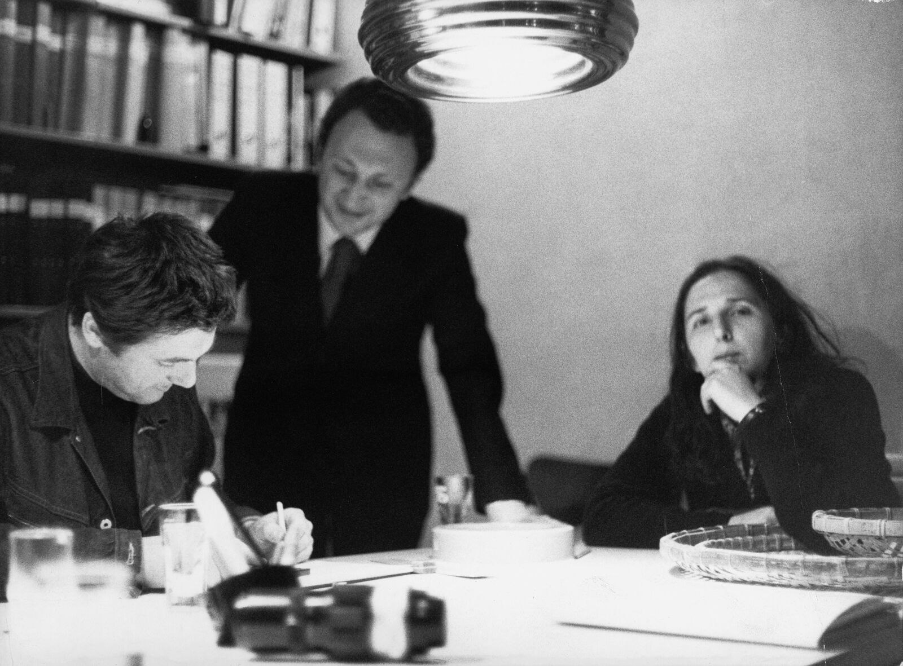
图：Sergio Gandini 与 Afra、Tobia Scarpa 在办公室。Gandini 1963 年起管理 FLOS，1965 年起任董事长，主导了迁厂与 Arteluce 并购。图源：FLOS 官方品牌历史页。
cocoon 家族：第一批灯
FLOS 最初的产品目录几乎被 cocoon 占据：Viscontea 卵球形吊灯、Taraxacum 蒲公英状球灯、细腿小猫一样的 Gatto 桌灯，以及 Tobia Scarpa 1960 年的 Fantasma。Tobia Scarpa 后来回忆这道工艺：树脂喷涂之后会随干燥收缩，最终形状取决于你在骨架里放了什么。Michael Anastassiades 多年后为 FLOS 重做 cocoon 系列时描述：骨架被转动时纤维附着上去，工匠不时停下转动，把松脱的纤维手工挂回去 —— 所以每一件都独一无二。
需要特别区分的是两代 Taraxacum：1960 年的 Taraxacum 是 cocoon 树脂喷在白色钢架上的蓬松白球；1988 年 Achille Castiglioni 单人设计的 Taraxacum 88 则是完全不同的结构 ——20 块压制抛光铝三角片拼成二十面体骨架，直接插着 60 只裸露的 Globolux 透明小灯泡，只在 "像蒲公英" 这一点上与前辈同名。二者在产品目录、价格和工艺上都不能混为一谈。
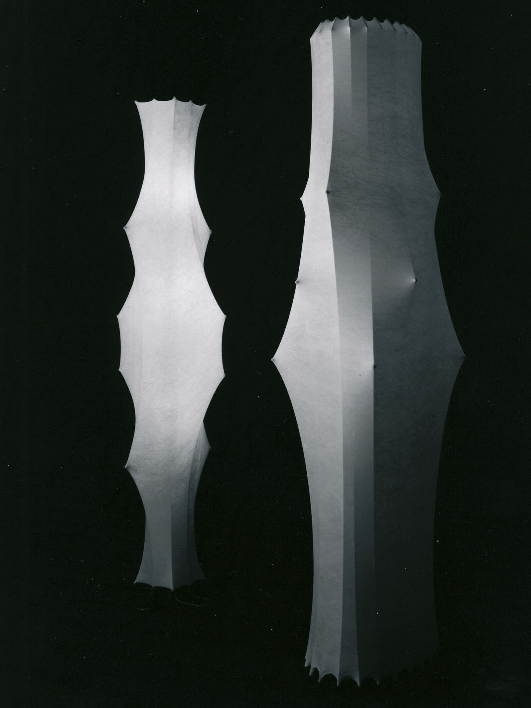
图：1960 年代初的 cocoon 落地灯柱产品黑白照，树脂纤维在钢架上形成蓬松半透膜。图源：FLOS 官方品牌历史页。
Piero Gandini 与明星设计师网络
1996 年起，Sergio 之子 Piero Gandini 出任 FLOS 董事长（直至 2019 年）。官方历史页记录了他主导的设计师签约顺序：1980 年代中期，Sergio 先在巴黎遇到年轻的 Philippe Starck，生产了以 Starck 女儿命名的 Arà 灯；Piero 把 Starck 为纽约一家酒店设计的塑料灯 Miss Sissi 产业化，官方给出的爆款数字是 "头十天售出 8000 只，一年 10 万只"。Starck 自己的描述是 "每个人潜意识里认为灯就该是这个样子的东西"。
此后是 Marc Newson（1993）、Romeo Moon（1996）、Jasper Morrison 的 Glo-Ball（1998）、Konstantin Grcic 的 Mayday（2001），2010 年代后有 Michael Anastassiades、Patricia Urquiola、Ronan & Erwan Bouroullec、Formafantasma。Morrison 在个人项目页回忆 Glo-Ball 的诞生：他为 FLOS 试了将近五年都没成，Piero Gandini 凭直觉砍掉两人手上另一个项目，转而开发吹制玻璃球家族，结果大获成功。2023 年，Barbara Corti 出任 FLOS 首席创意官，统管四个事业部的创意策略。
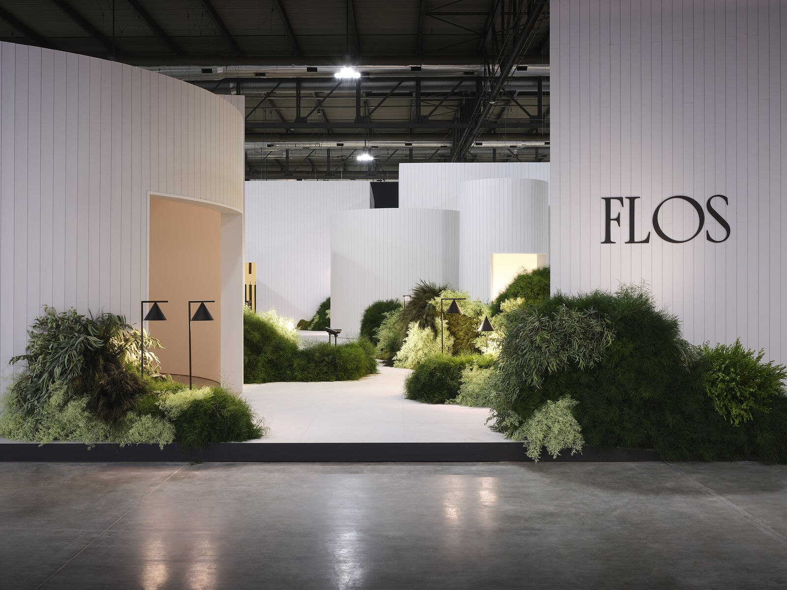
图：米兰设计周 FLOS 展位，白色弧墙与植物构成的沉浸式空间。2025 年 Euroluce 展位主题为 "The Light of the Mind"。图源：FLOS 官方品牌历史页。
集团化：从 Investindustrial 到 Flos B&B Italia Group
2014 年，Investindustrial 入股 FLOS，随后在设计行业展开一连串并购：2015 年 B&B Italia、2016 年 Arclinea、2017 年 Oka、2018 年 Louis Poulsen。2018 年 11 月，Investindustrial 与 Carlyle 合资组建 Design Holding，FLOS、B&B Italia、Louis Poulsen 成为三大核心公司。2021 年 6 月集团收购美国高端照明电商 YDesign（旗下 Lumens、YLighting），把北美设计师渠道内化；2021 年与 LVMH 旗下 FENDI 合资运营 FENDI Casa。2024 年 5 月 16 日，集团更名为 Flos B&B Italia Group S.p.A.，把公司名直接锚定到 FLOS 与 B&B Italia 两个旗舰品牌。
建筑线的资产来自两次收购：2005 年末 FLOS 取得西班牙瓦伦西亚 Antares 75% 股权（2014 年后全资），形成 Flos Architectural，运营总部设在 Riba-roja de Túria；2015 年 6 月收购意大利户外建筑照明公司 Ares（Bernareggio），形成 Flos Outdoor。集团 2024 年口径为 GMV 8.88 亿欧元、并表收入 7.68 亿欧元、9 个品牌、约 2159 名员工、10 处工厂；FLOS 单体 2024 年收入 2.24 亿欧元、618 名员工。
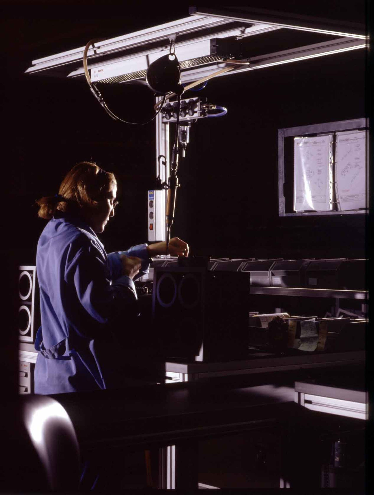
图：瓦伦西亚 Antares 车间的装配工位，Flos Architectural 建筑照明系统的研发与组装基地。图源：FLOS 官方品牌历史页。
04 Category 品类与市场：两种采购逻辑下的照明生意
品类的两个口径
谈 FLOS 的市场，必须先分清两种采购逻辑完全不同的生意。
第一种是装饰性设计师灯具（decorative /furniture lighting）。台灯、落地灯、吊灯、壁灯本身就是家具和陈设，买的是造型、署名与文化符号，按件计价、插电或简单悬吊即可使用。采购方式是消费者或设计师在产品目录和展厅里 "选一件灯"。这一通道毛利高、批量小，靠品牌拉力而非走量。
第二种是建筑与工程照明（architectural /specification lighting）。以 Infra-Structure、The Running Magnet 磁吸轨道、UT 筒射灯为代表，走 professional.flos.com，不挂零售价，提供 IES 光强文件、DALI/1-10V/Casambi 调光协议、CAD/Revit 块，按项目报价。采购链是照明设计师在图纸阶段指定型材长度、光束角与控制协议，业主照单付工程款。Outdoor 与 Custom 是这一逻辑的延伸：前者把装饰款工程化到 IP65 防水等级，后者为大项目做非标饰面与光源。
术语注释：specify—— 设计师在图纸或物料清单阶段指定具体品牌型号，业主按清单采购，是工程照明的核心成交方式。
两种逻辑的差异可以概括为：装饰线靠品牌拉力（pull），建筑线靠设计师指定的推力；装饰线单品毛利高但批量小，建筑线客单价高、复购来自同一项目的多个标段。
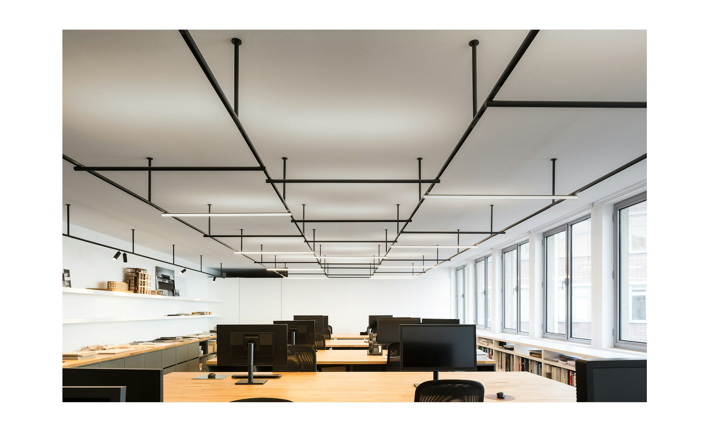
图：办公空间中黑色管状 Infra-Structure 轨道网络，工程级 spot 与装饰灯头混装在同一系统，是建筑工程口径的代表产品。图源：FLOS Professional Infra-Structure 故事页。
市场规模的判断口径
各家机构对 "装饰照明" 的统计口径差异接近一倍，以下数字只能作方向性参考。Mordor Intelligence 估计全球装饰照明市场 2025 年约 758.8 亿美元、2031 年约 965 亿美元、年复合增 4.09%；Fortune Business Insights 对 "高端照明" 的估计是 2025 年 210.8 亿美元、年复合增 8.0%。高段增速（约 8%）明显快于大盘（约 4%），这是 FLOS 所在赛道最值得注意的方向。FLOS 单体 2024 年收入约 2.24 亿欧元、2025 年约 2.29 亿欧元，在全球高端照明 200 亿美元的盘子里只占个位数百分比，是典型的 "窄而高" 玩家。FLOS Architectural 业务线收入未单独披露，这是公开数据的缺口。
价格带：2026 年 10 月实查
以下价格为 2026-10-21 在 flos.com 各国家站、MoMA Design Store、Finnish Design Shop、2Modern 等渠道实查的目录价或促销价；欧洲站当时处于秋季促销窗口，促销价会随季节变动。
| 型号（年份） | 美国官方 / 零售 | 欧洲官方 / 零售 | 备注 |
|---|---|---|---|
| Arco（1962） | $4,095 | — | Arco K 水晶限量版 $12,600 |
| Taccia（1962） | — | €3,016（黑） | Taccia Small 促销约 €1,084 |
| Toio LED（1962） | $2,310 | 促销约 €1,105 起 | 哑光黑限量 €1,600 |
| Parentesi（1971） | $540 起 | 促销约 €329 起 | 结构性入门款 |
| Snoopy（1967） | $1,840 | 促销约 €1,077 | 现行版为 2003 年再版 |
| Splügen Bräu（1961） | $820（backorder 8–10 周） | 促销约 €400 起 | 卤素款交付期长 |
| Glo-Ball（1998） | Mini 桌灯 $315 起 | 桌灯约 €695 | 入门经典 |
| IC Lights（2014） | T1 $790 / F1 $1,115 | T1 约 €545 | 2024 十周年 24K 镀金版 |
| String Light（2014） | Sphere $1,665 起 | Cone 促销约 €914 起 | 按灯头 / 电缆 / 配件计价 |
| Captain Flint（2015） | 室内 $2,625 / 户外 $3,865 | 室内促销约 €1,397 | 户外版显著溢价 |
| Skygarden（2007） | Skygarden 1 $4,065 | Small 促销约 €1,258 | 石膏内穹浮雕 |
| Mayday（2000） | $210 | 约 €150（促销更低） | 全品牌门槛价、礼品款 |
| Noctambule（2019） | Cone 吊灯 $5,010 起 | S1 €2,990（Offline Exclusive） | 当代款价格天花板之一 |
| Wireline（2019） | — | 约 €3,300–3,430（Offline Exclusive） | 仅门店发售 |
| Taraxacum 88（1988） | S1 $8,285 | — | 收藏级 |
| Viscontea（1960） | — | 促销约 €1,550–1,824 | cocoon 工艺 |
一个反常识的结论是：经典款与当代款的单价已经趋同，Noctambule（2019）比 Arco（1962）更贵。经典款的 "收藏溢价" 主要体现在 Arco K、Taraxacum 88 这类限量或特别配置上，而不是普通经典本身。与同库 Artemide 档案的 2026 年 9 月价格对照：Artemide 主力 Tizio LED 约 630 美元、Tolomeo 台灯约 231 欧元起，FLOS 同尺度产品整体价格带上移约 30–80%。
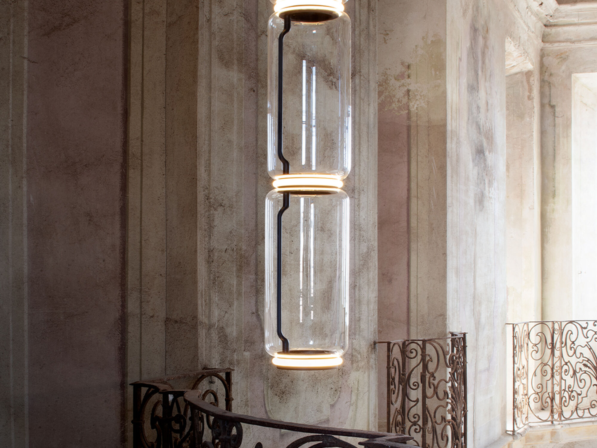
图：夜晚节点 LED 环点亮的 Noctambule，多模块配置总价常达 5000–15000 欧元，当代款价格高于多数经典款。图源：FLOS 官网 Noctambule 产品页。
品类惯例与渠道结构
设计师署名加年份是这个品类的硬通货：FLOS 每个型号页都固定标注 "Achille and Pier Giacomo Castiglioni, 1962" 这类署名，与 MoMA、Cooper Hewitt、Vitra 的馆藏互为背书。
术语注释：category codes—— 品类中心照不宣的设计惯例与符号，如 "署名＋年份"" 博物馆馆藏 ""金圆规奖" 等价值锚。
其他品类惯例包括：长售期被视为常态 —— 经典款自 1960 年代连续在产，"再版" 不是营销词而是目录常态，真正的限量只出现在 Arco K、Toio 哑光黑、Parentesi 50、IC 十周年这类编号款；卤素与 LED 并行销售，欧洲因能效法规有大量 "last call" 停产型号；重款（Noctambule、Wireline）被标为 Offline Exclusive，线上不发货，强制把高客单客户导向展厅。
术语注释：Offline Exclusive—— 仅在实体门店销售、线上不发货的型号，是品牌维护展厅体验与高客单服务的策略。
渠道是三层结构：自营旗舰店（米兰、巴黎、纽约）与 flos.com 各国电商；第三方设计经销商（欧洲 light11、smow、Finnish Design Shop，北美 2Modern、MoMA Design Store）；以及 2021 年收购的多品牌平台 Lumens，承接比价流量。项目端则通过 professional.flos.com 对接建筑师与照明设计师，提供 spec sheet、IES 文件、DALI/Casambi 协议与 Bespoke 定制服务。
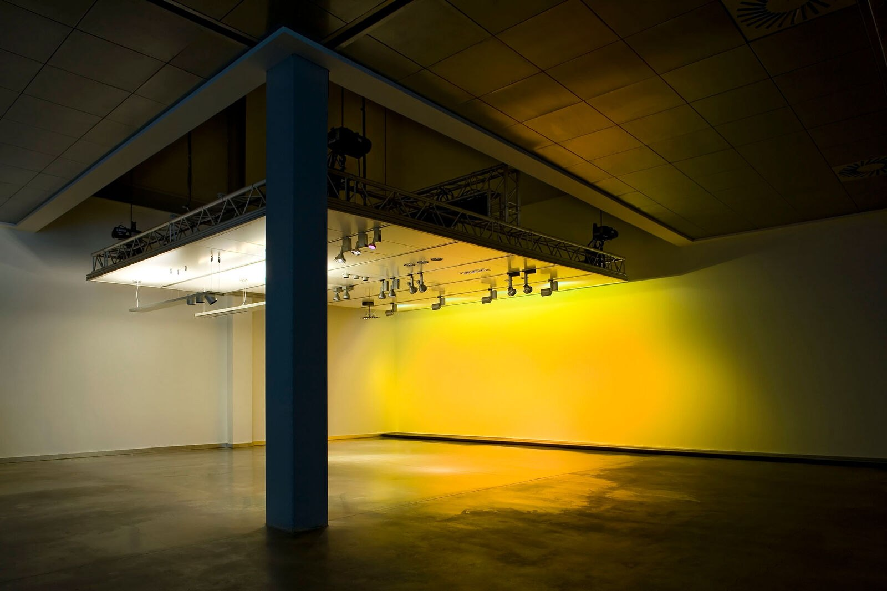
图：瓦伦西亚 Antares 展厅的墙面洗光测试区，建筑照明线在这里为项目客户做光束与色温对比。图源：FLOS 官方品牌历史页。
05 User 用户与场景：买者、定者与用者的分离
决策链：买者、定者与使用者
设计师灯具是一个三方决策天然分离的品类。买者是高净值住宅业主、酒店与零售业主、项目总包，他们多数不亲自选灯，按清单付款；定者是建筑师、室内设计师与照明设计师，他们才是 FLOS 营销的第一对象，专业站的光度文件、Bespoke 服务和欧展展位都为他们准备；用者是终端住户、酒店客人和办公员工，他们可能叫不出 Arco 的名字，却在罗马宝格丽酒店、曼哈顿餐厅和设计酒店的书桌上反复 "瞥见" 它。
术语注释：JTBD（Jobs to Be Done，用户任务）—— 用户 "雇佣" 一件产品去完成的功能、情感与社会任务。
三方的信息入口完全不同：买者靠设计师推荐与展厅，定者靠 Dezeen、Architonic、专业站与 IES 数据库，用者靠空间现场体验形成认知，再反向查牌。这解释了 FLOS 为什么坚持在米兰、纽约、巴黎开大型旗舰店，也解释了为什么 Lumens 这样的电商平台值得集团收购 —— 它同时买来了美国设计师群体的比价习惯。
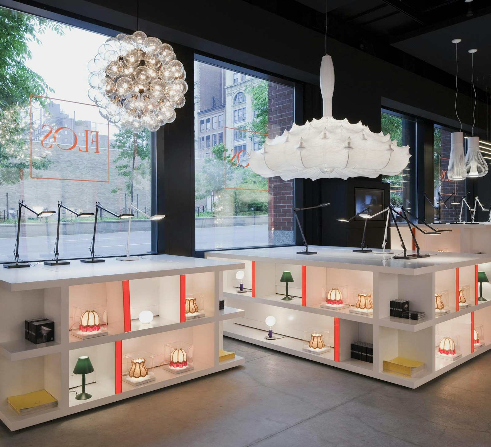
图：纽约 Soho 区 Greene Street 152 号的 FLOS 旗舰展厅，是北美设计师与高净值客户现场核对尺度与材质的入口。图源：FLOS 日本站旗舰店档案。
四类场景中的任务与入口
术语注释：CEP（Category Entry Points，品类入口）—— 用户首次意识到需求、接触品类的具体场景与渠道。
| 场景 | 核心 JTBD | 主要 CEP | 典型型号 |
|---|---|---|---|
| 住宅自购 | 挑一件五十年不过时、朋友来访会问的设计物件（情感任务为主） | 设计媒体刷灵感 → 电商比价 → 展厅看尺度与重量 → 下单 | Arco、Taccia、IC Lights、Noctambule |
| 设计师配单 | 在图纸阶段指定不出错、可采购、有光度文件的品牌 | professional.flos.com 下载 spec sheet/IES → 欧展展位 → 销售工程师对接 | Infra-Structure、The Tracking Magnet、装饰线全家 |
| 礼品与收藏 | 买一件有博物馆馆藏背书、200–2000 美元的设计礼 | MoMA Design Store、官方 Gift Guide、Mytheresa、拍卖市场 | Mayday、IC T1、Snoopy |
| 工程项目 | 为大项目提供可复制、可维护、有 CRI 95 与调光协议的系统 | Valencia/Bernareggio 工程团队、CAD 库、Bespoke 非标开发 | Running Magnet、Outdoor、Custom |
值得注意的是住宅场景里的 "展厅强制"：Arco 与 Taccia 必须现场看大理石重量与真实尺度，Noctambule 与 Wireline 干脆只在线下发售。FLOS 把高客单决策的最后一公里物理锁在展厅，电商主要承担入门款与礼品款成交。
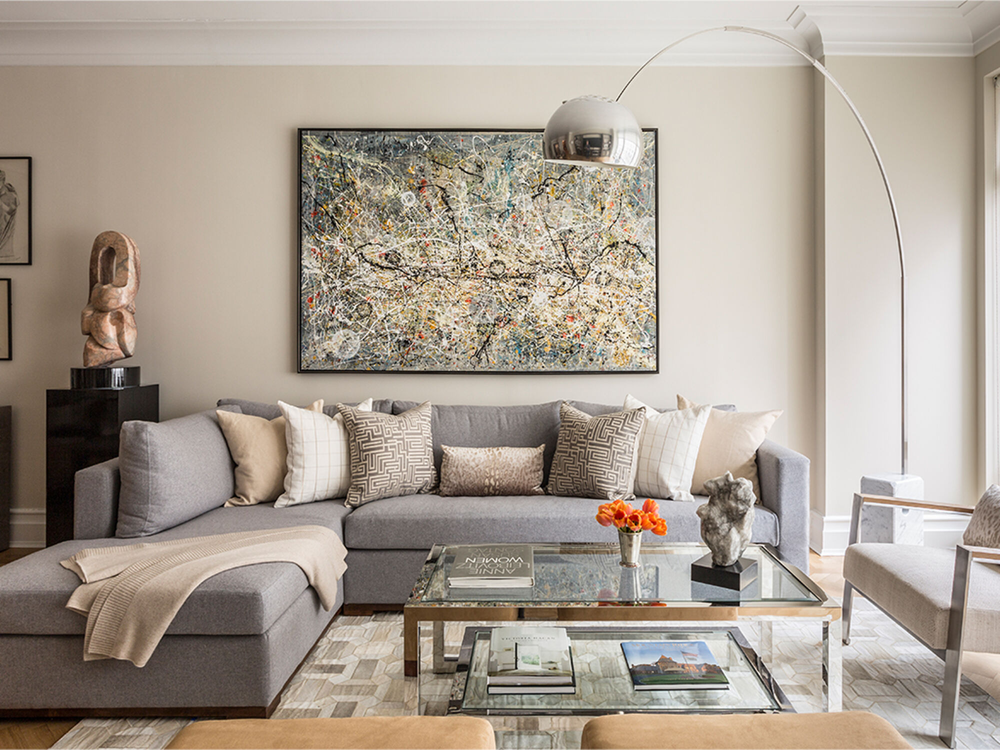
图：Arco 在真实客厅中横跨近两米的体量，以及 65 公斤大理石底座的占地，都是电商页面无法替代、必须在展厅确认的尺度。图源：FLOS 官网 Arco 设计故事页。
06 Positioning 定位：比工程更雕塑，比雕塑更工程
参照系与目标人群
FLOS 的参照系不是灯具厂，而是意大利设计史本身：它的产品与 Cassina 的家具、Alessi 的器物、B&B Italia 的沙发共享同一个 "设计师署名的现代经典" 评价体系。目标人群有两层：愿意为一件灯支付 2000 美元以上的高净值个人客户，以及把 FLOS 当作 "安全的指定项" 的建筑师与室内设计师。前者买的是文化符号与长期不过时，后者买的是可采购、可交付、不会在方案评审时出错的确定性。
差异点与共同点
术语注释：POD（Point of Difference，差异点）—— 品牌相对竞品独有的、被消费者认可的差异。 术语注释：POP（Points of Parity，基准点）—— 在品类中必须具备、否则无法入围的共性能力。
FLOS 的 POD 有三个：一是 Castiglioni 兄弟遗产构成的 "现代经典密度"，Arco、Taccia、Toio、Snoopy、Parentesi 五件同年诞生、至今在产、多件入藏 MoMA 的阵容，没有第二家品牌拥有；二是 "雕塑感" 与 "设计幽默感" 的统一，街灯、狗鼻子、汽车大灯这类现成品借用让它的灯比工程导向品牌更有叙事性；三是经典目录与当代设计师网络的并行经营，同一份渠道里既卖 1962 年的 Arco，也卖 2019 年的 Noctambule。
POP 同样有三个：高端照明的光学品质（显色、调光、无眩光）、项目级的协议与文件能力（DALI、IES、CAD）、以及可靠的欧洲制造与备件体系。这三项做不到，品牌连设计师的候选清单都进不去；但只有这三项，品牌就只是工程供应商，拿不到 FLOS 的溢价。
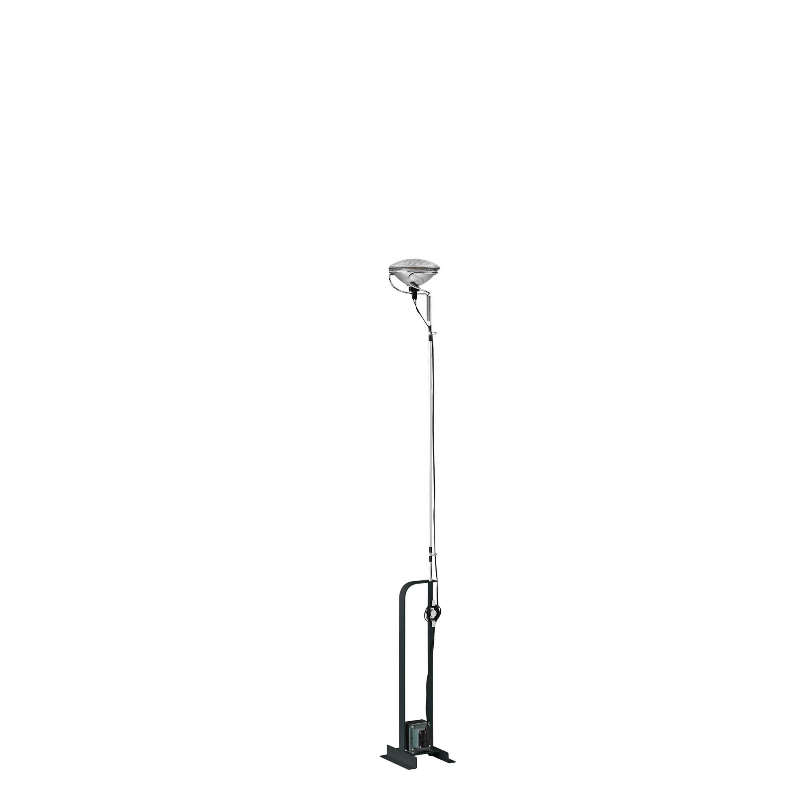
图：Toio 直接以汽车大灯、角铁底座、钓鱼竿导环与船用系缆羊角组成灯具，"雕塑感与设计幽默感统一" 是 FLOS 难以被工程品牌复制的差异点。图源：FLOS 官网 Toio 产品页。
从品牌承诺到产品证据的链
定位是否成立，要看承诺能不能逐件落到产品上。FLOS 的承诺链是："光可以被塑形，灯可以是日常物的诗意变形，经典可以持续生产六十年"。落到证据，Arco 用街灯悬臂解决不开洞的吊灯需求；Parentesi 用一根张拉钢索取消了所有夹具，灯头靠摩擦停在任意高度；cocoon 系列用树脂雾面把灯泡变成一团发光的雾；Noctambule 让玻璃柱白天隐形、夜晚在节点发光；Infra-Structure 则第一次把装饰线灯头和工程级磁吸轨道装进同一个系统，证明 "雕塑感" 可以延伸到工程市场。这套证据链的完整性，是 FLOS 比竞品贵 30–80% 仍然成立的原因。
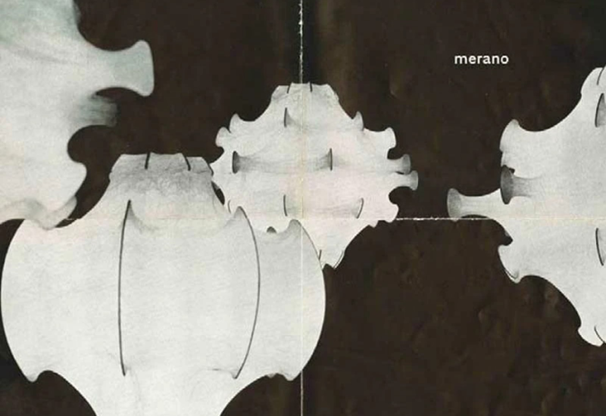
图：1960 年代 FLOS 的 cocoon 产品画册，标有 Merano 字样 —— 长寿命的经典目录本身就是品牌最重要的资产。图源：FLOS 官方 1960 哲学页。
07 Product 产品：从街灯、狗鼻子到隐形光柱
产品组合与家族结构
FLOS 现行产品按四个事业部分布。Decorative 是品牌主体，又可分为三段：Castiglioni 时代的现代经典（1954–1979，含 cocoon 家族、Arco、Taccia、Toio、Snoopy、Parentesi、Splügen Bräu、Luminator）；1990 年代至 2000 年代的设计师扩张期（Romeo Moon、Glo-Ball、Mayday、Skygarden）；2014 年后的当代系列（IC Lights、String Light、Captain Flint、Noctambule、Wireline、SuperWire）。Architectural 以 Infra-Structure、The Tracking Magnet 等轨道系统为核心；Outdoor 以 Camouflage、Captain Flint Outdoor、Ipnos 为代表；Bespoke 为酒店、零售、文化项目做非标定制。
术语注释：hero product（主推产品）—— 品牌在某一时期集中资源推广的形象款。 术语注释：halo product（光环产品）—— 本身销量未必最大、但为整个品牌带来光环背书的型号。
在角色分工上，Mayday、IC Lights 是走量与入门款，Arco、Taccia、Noctambule、Infra-Structure 是各价格段的 hero，Arco K、Taraxacum 88 这类限量款承担 halo 与收藏功能，而 Arco 本身是全品牌最大的 halo—— 它的法律维权史还在 2011 年为整个意大利工业设计争取到了著作权保护。
Arco（1962）：一盏被搬进客厅的街灯
1962 年的意大利住宅，餐厅想要吊灯却不愿在天花板开洞，传统落地灯只能贴墙放、照不到桌面中央。Castiglioni 兄弟的解题思路是把路灯的悬臂逻辑搬进客厅：电源与配重落在地面，一根不锈钢拱臂把光源送到桌面正上方。
工程细节围绕这根拱臂展开：底座是一块白色 Carrara 大理石长方体，重约 65 公斤（LED 版官方规格 63.85 公斤），压住约两米拱臂的前倾力矩；边角斜切倒角，官方理由是撞到不会伤人；重心处的圆孔穿木杆供两人抬运。臂为缎面不锈钢三段伸缩管，可改变横跨长度；末端是压制、抛光、zapon 清漆处理的铝反射器，可旋转、可升降，光线经穿孔铝漫射器向下投射。MoMA 馆藏尺寸为高约 95 厘米、横跨约 200 厘米。
Arco 自 1962 年连续生产至今，入藏 MoMA（馆藏号 65.1990，制造商本人捐赠），并出现在《007：金刚钻》《意大利任务》等影片中。它也是被仿冒最多的意大利灯具：2006 年米兰法院在临时禁令中认定 Semeraro 的 "Fluida" 灯奴性模仿 Arco；2011 年欧盟法院（C-168/09）终审确认，1962 年的 Arco 在进入公有领域之前已受意大利版权法保护，具备 "艺术属性" 的工业设计可作为艺术品享有著作权。2012 年，FLOS 推出 Arco LED 版纪念 50 周年（注意不是 2016 年）；2020 年品牌 60 周年又推出水晶玻璃底座的限量版 Arco K。现行在售包括白炽 / 卤素版、LED 版与 Arco K，美国官方价 4095 美元，Arco K 为 12600 美元。官方产品页见 FLOS Arco，设计故事见 Arco: A Design Icon。
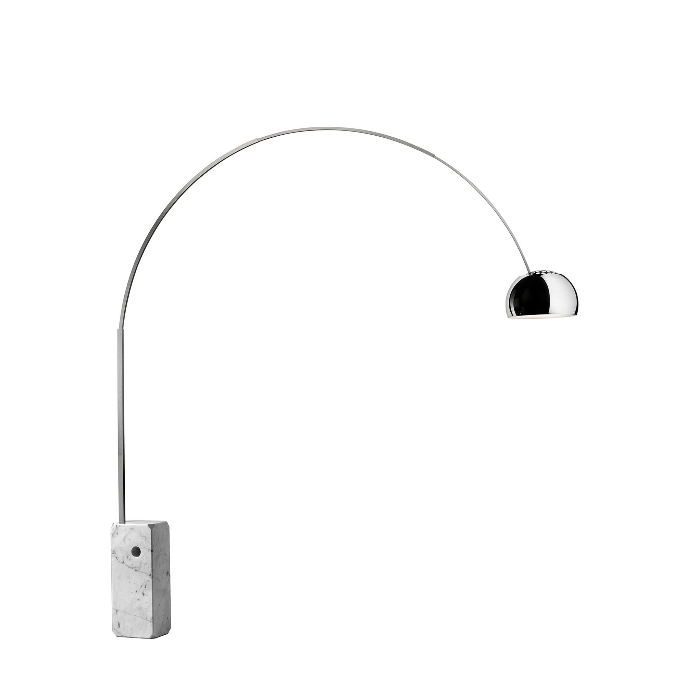
图：Arco 官方白底整机图，Carrara 大理石底座、不锈钢伸缩拱臂与可旋转铝反射器三段结构清晰可见。图源：FLOS 官网 Arco 产品页。
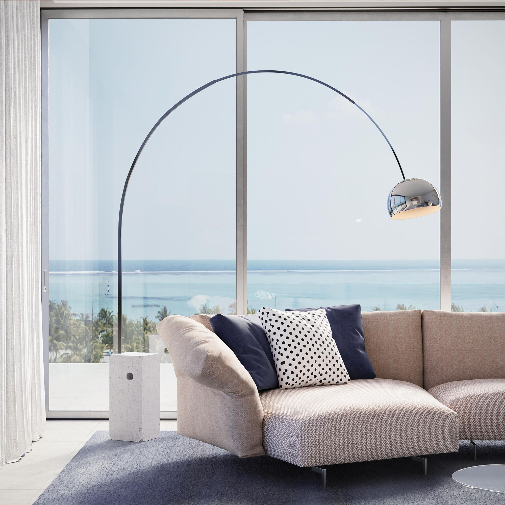
图：2012 年 50 周年 LED 版在客厅中的点亮状态，外形与 1962 原版保持一致，光经穿孔铝漫射器下投。图源：FLOS 官网 Arco 产品页。
Taccia（1962）：一盏倒扣在桌面上的吸顶灯
Taccia 的出发点近乎玩笑：把一盏吸顶灯倒扣过来放在桌上。1958 年的第一版原型用半透明塑料做支撑、乳白塑料做反射碗，但白炽灯的热量把塑料烤得流淌变形，兄弟俩放弃塑料，改用穆拉诺手工吹制的透明玻璃碗，灯体改为阳极氧化铝柱散热。这一原型 1959 年 3 月在芝加哥伊利诺伊理工学院设计学院展出，随后被 FLOS 投产。
现行版本的玻璃碗倒扣在古典柱式的铝制灯体上，可绕灯体转动 —— 碗口朝向决定反射光投向哪里，光源藏在柱顶，光线经玻璃碗内面反射后向下、向四周漫射，桌面得到一片柔和的间接光，而不是传统台灯的直射光斑。灯体有黑、哑白、银阳极、铜色阳极四种表面，底座镀镍，集成 10%–100% 调光器。LED 化之后，FLOS 终于推出 PMMA 亚克力碗版本，实现了兄弟俩当年用塑料的初衷 —— 这是被光源技术延迟了半个世纪的设计。Taccia 1999 年由 FLOS 捐赠入藏巴黎蓬皮杜中心。
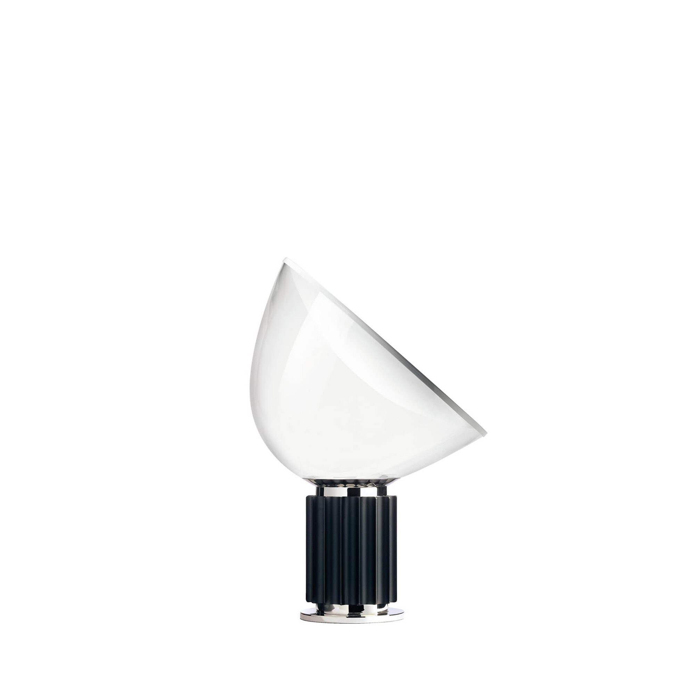
图：Taccia 黑色灯体现行版，抛物面口吹玻璃碗倒扣在阳极氧化铝柱上，镀镍底座内置调光器。图源：FLOS 官网 Taccia 产品页。
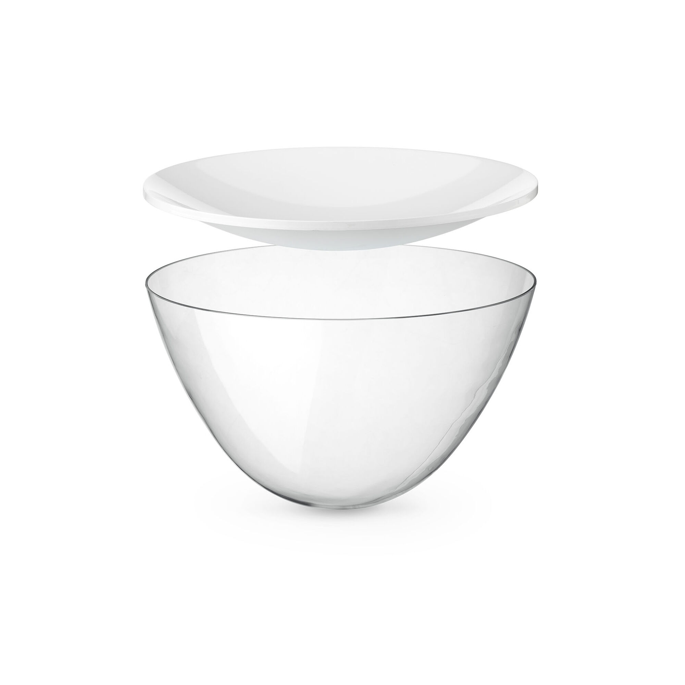
图：Taccia 透明口吹玻璃碗与铝反射器细节，碗体可绕灯体旋转改变光的投向。图源：FLOS 官网 Taccia 产品页。
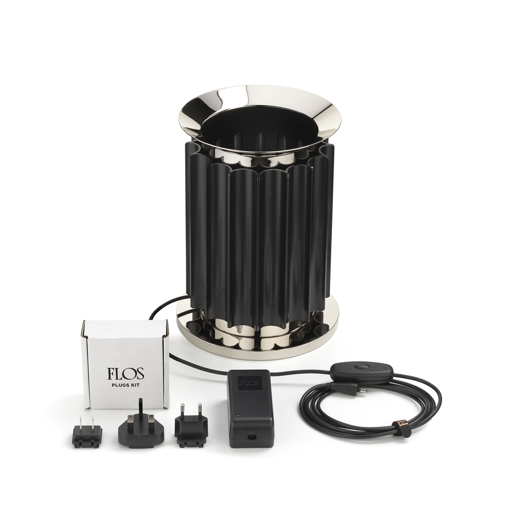
图：Taccia 灯柱的散热槽与底座旋钮，光源自柱顶向上发光，再经玻璃碗反射。图源：FLOS 官网 Taccia 产品页。
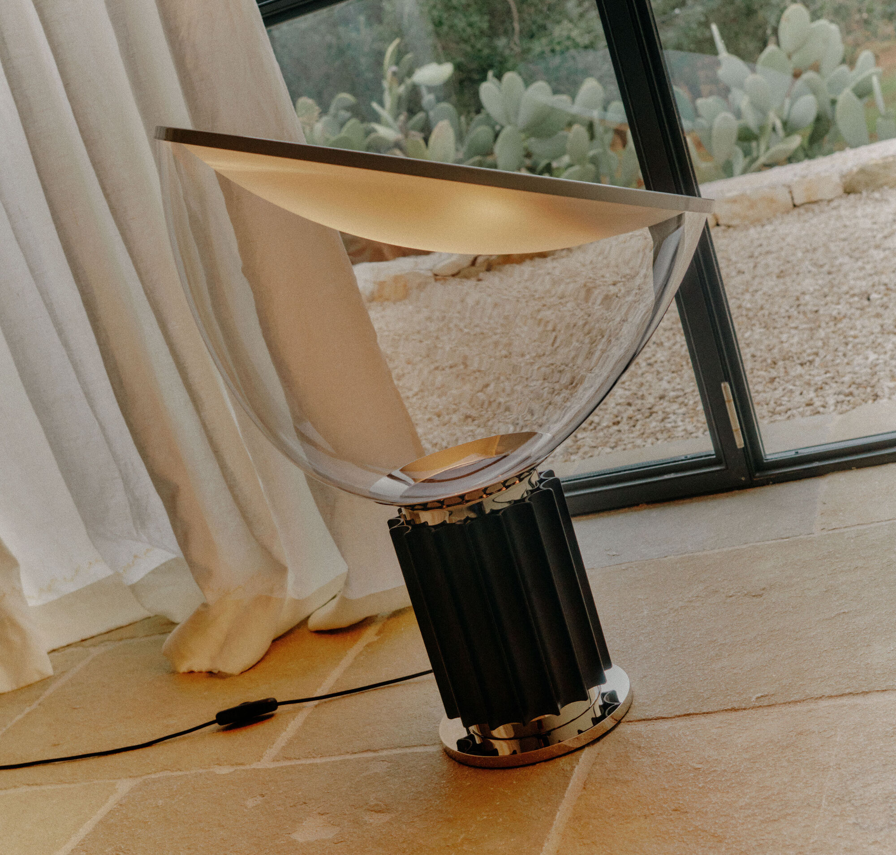
图：点亮的 Taccia 置于边柜上，间接光经玻璃碗打向天花板再漫洒下来。图源：FLOS 官网 Taccia 产品页。
Toio（1962）：从汽车零部件目录里抄来的灯
Toio 是现成品哲学最直白的样本：兄弟俩没有设计灯罩，而是直接从汽车零部件目录里选了一只伸缩式汽车前大灯，插在一根镀铬六方黄铜杆顶上；底座用角铁与冲压钢板焊成矮梯形盒子，里面塞着变压器，漆面盒子直接当配重，变压器故意外露。电源线沿杆身走，借用钓鱼竿导线环引导，线尾用船用系缆羊角收卷。官方规格页逐字写明了这两处借用。
"Toio" 来自英文 toy（玩具）。整灯摆出一副未完工的工业装置姿态，照出的不是装饰光，而是一束可以像修车灯一样打到任何角度的强光，向上反射使用。车灯的具体车厂与供应商（Carello？Bosch？Fiat？）在官方资料中没有记载，这是待核实的缺口。现行 LED 版有黑、红、白与哑光黑限量色，原版卤素版在部分市场已停产；FLOS 官方称其入藏 MoMA。
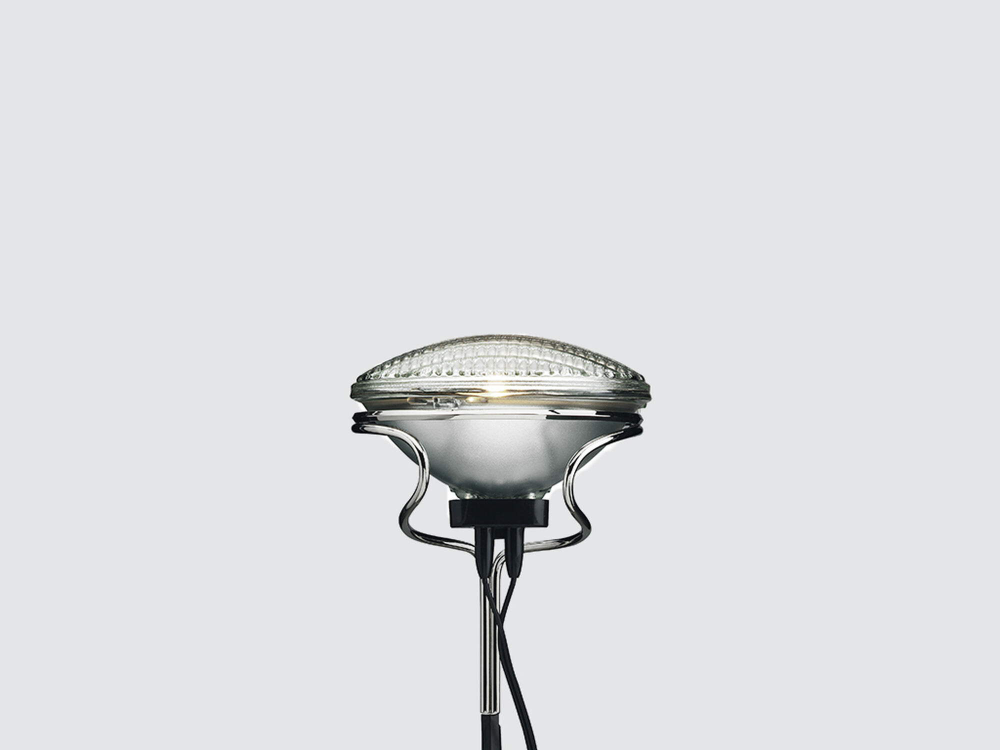
图：Toio 伸缩式汽车前大灯总成与杆顶连接件，灯头可调整俯仰角度。图源：FLOS 官网 Toio 产品页。
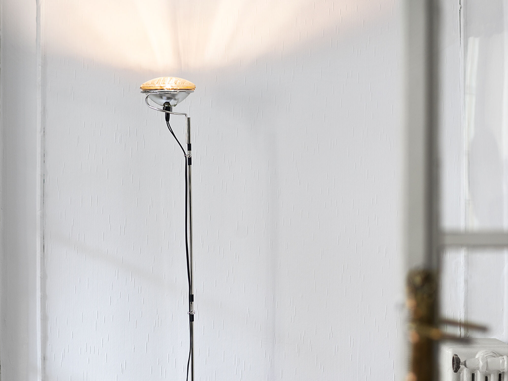
图：Toio 向上反射使用，强光打向天花板再漫回室内，是其推荐的工作姿态。图源：FLOS 官网 Toio 产品页。
Parentesi（1971）：一根拉在天花板与地面之间的钢索
Parentesi 的原始草图出自 Pio Manzù（1939–1969）：雕塑家 Giacomo Manzù 之子、乌尔姆造型学院出身、Fiat 127 的汽车设计师，1969 年因车祸去世，年仅 30 岁。Achille Castiglioni 在他死后把草图落地为产品，两人终生未谋面。FLOS 官方写明：Parentesi 同时署两人的名，是 Castiglioni 对原创想法的致敬。
结构上，一根细钢索从天花板拉到地面，地面端用铸铁配重永久拉紧；灯头是一截涂漆或镀镍钢管，套在钢索上靠尼龙滑块上下滑动，松手即停 —— 不需要夹具、不需要工具。Achille 自己解释了关键改动："Pio Manzù 设想的是一根固定竖杆和一个带槽的圆柱灯盒上下移动…… 我把竖杆换成了金属索，索一旦弯曲就产生摩擦力，让灯无需螺丝就能停住。" 整灯像一个悬在括号 "（ ）" 中的竖点，Parentesi 即意大利语 "括号"。它 1979 年获金圆规奖（Compasso d'Oro），入藏 MoMA（MoMA 目录标注 1970 年，FLOS 目录统一为 1971 年，两个口径并存）。现行有开关版、调光版与可加灯头的 Element 扩展件。
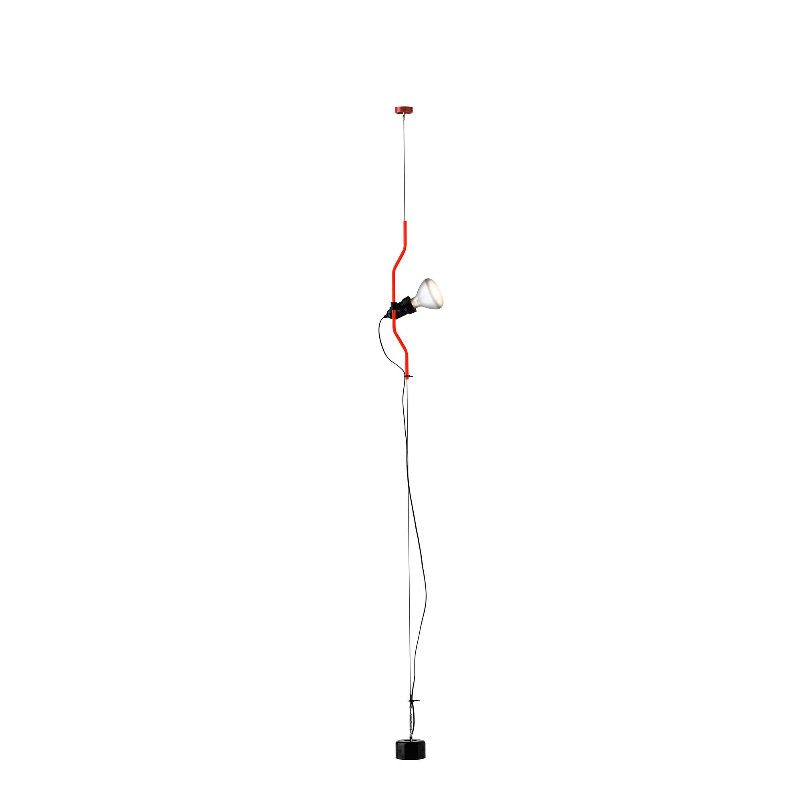
图：Parentesi 红色 50 周年版官方图，细钢索垂直张拉，管形灯头悬停于索上。图源：FLOS 官网 Parentesi 产品页。
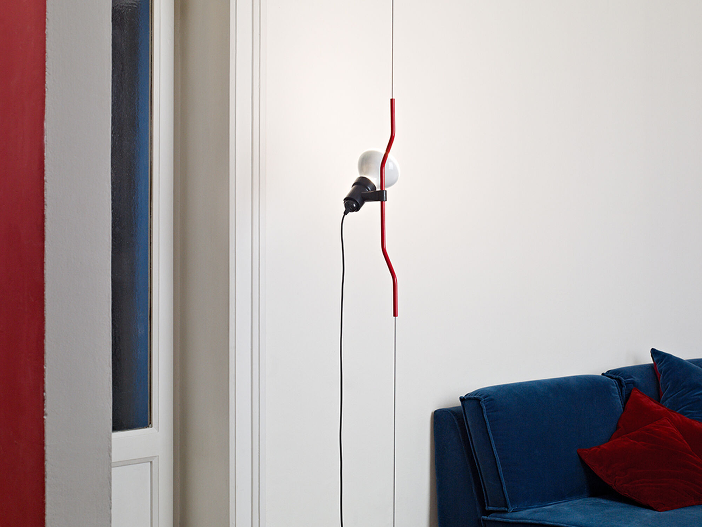
图：红色灯头在素色空间中像一个悬浮的竖点，灯头高度随手部推拉改变。图源：FLOS 官网 Parentesi 产品页。
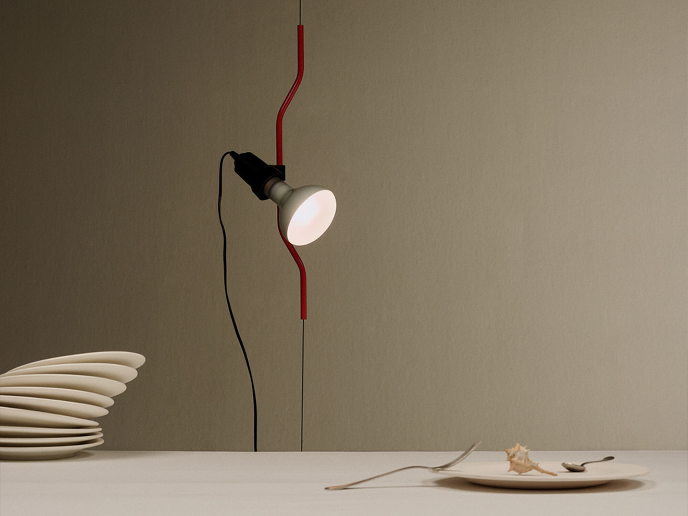
图：黑色版 Parentesi 在室内的实际效果，地面铸铁配重与天花夹具之间的钢索几乎隐形。图源：FLOS 官网 Parentesi 设计故事页。
Snoopy（1967）：一只趴在大理石块上的狗鼻子
1960 年代，Charles Schulz 的《Peanuts》正在欧洲流行。兄弟俩把灯罩做成一只斜伸的狗鼻子轮廓，底座斜切一块 Carrara 白大理石承住光源，远看就是史努比趴着思考的剪影。光源藏在大理石块内，向上打入搪瓷铝反射器，再向下直射桌面 —— 倾角同时决定了光线落位与剪影姿态。
现行版本为倾斜搪瓷铝反射器、实心白色 Carrara 大理石底座，底座集成触控无级调光器，颜色有黑、橙、绿、蓝等。FLOS 官方明确：原版 1967 年推出，现行版本是 2003 年以更新技术再版的（并非流传的 2018 年）。美国 MoMA Design Store 售价 1840 美元，是经典台灯里的高价位。
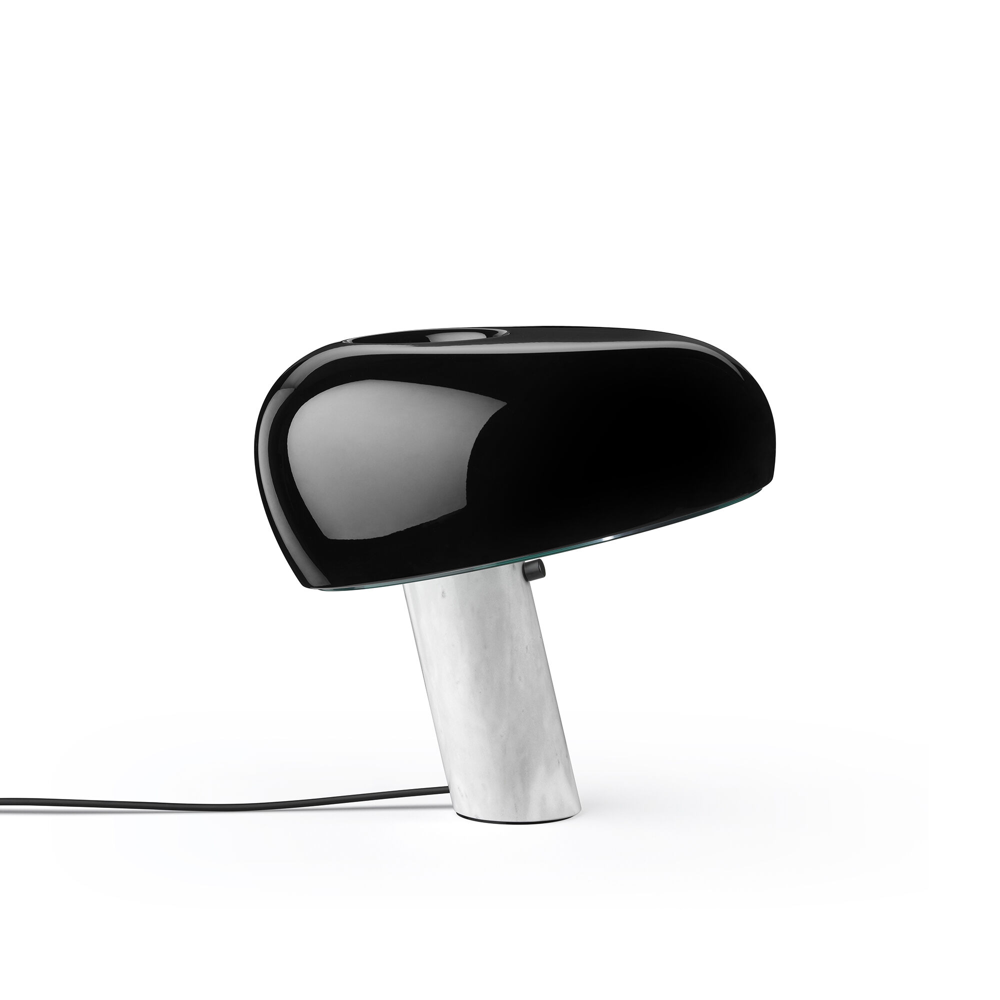
图：Snoopy 橙色搪瓷反射器搭在斜切 Carrara 大理石底座上，侧面轮廓是史努比趴卧的剪影。图源：FLOS 官网 Snoopy 产品页。
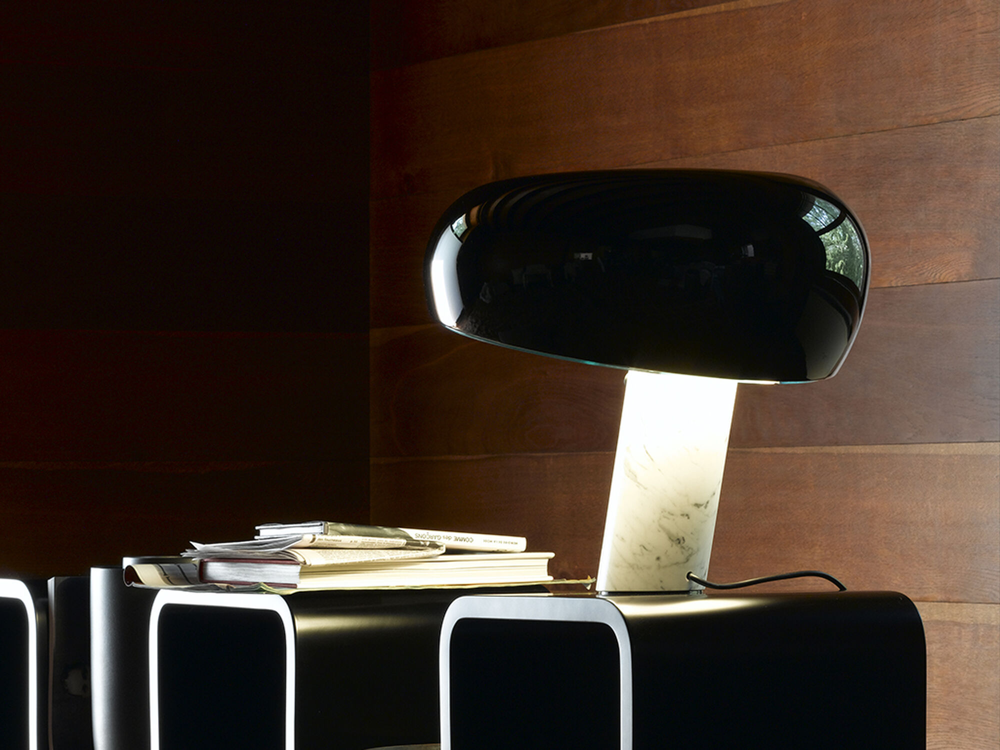
图：点亮后光线由大理石块内向上打入搪瓷反射器，再向下直射桌面。图源：FLOS 官网 Snoopy 产品页。
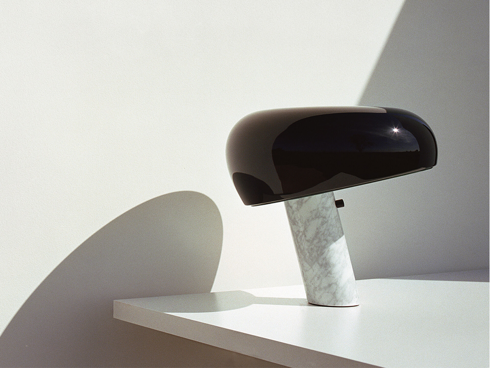
图：白色版 Snoopy 与大理石桌面、白色墙体的搭配，反射器颜色不同而剪影不变。图源：FLOS 官网 Snoopy 产品页。
Viscontea（1960）：茧中的子爵夫人
Viscontea 是 cocoon 家族的吊灯代表，名字取自 "子爵夫人"（viscontessa）的意象。白色粉末喷涂钢架焊接成卵球形骨架，反复喷涂 cocoon 树脂形成半透明漫射体，外部再喷透明保护层；灯光穿过茧膜漫射出来，像一团悬在空中的雾。现行型号 F8001009 仍在产，欧洲售价约 1800 欧元起，入藏 MoMA。1962 年它与 Taraxacum 一起被兄弟俩拿给 Marcel Breuer 看过。
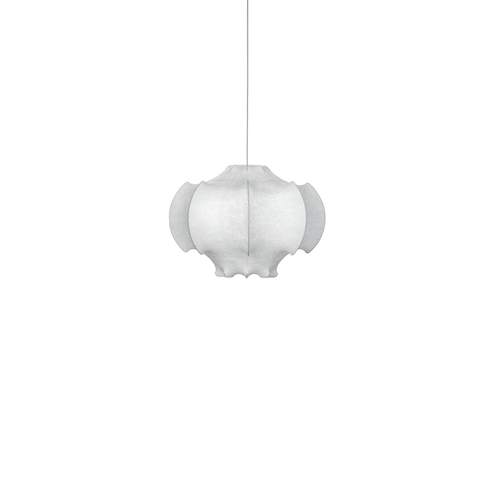
图：Viscontea 卵球形 cocoon 吊灯，白色钢架上的树脂茧膜呈半透雾面。图源：FLOS 官网 Viscontea 产品页。
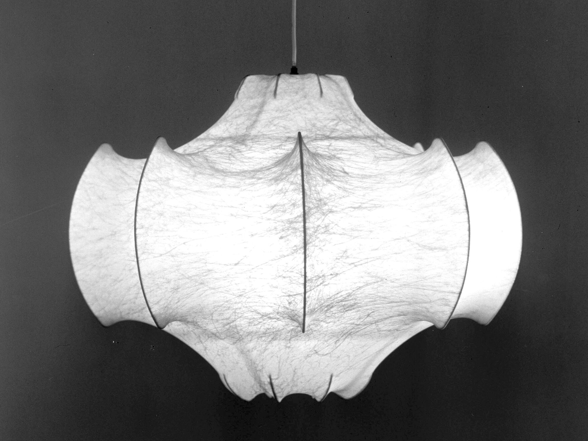
图：Viscontea 茧膜表面的树脂纤维纹理，纤维缠绕的随机性使每一件都不相同。图源：FLOS 官网 Viscontea 产品页。
Taraxacum 1（1960）：喷出来的蒲公英
1960 年的 Taraxacum 名字来自蒲公英（意大利语 tarassaco），茧膜在灯光下像蒲公英冠毛一样蓬软。官方描述逐字为 "白色热喷涂钢架，覆以独有的 Cocoon 树脂形成漫射器，再以透明喷涂层保护"。原版有 Taraxacum 1（约 80 厘米）与 Taraxacum 2（约 105 厘米）两个尺寸。它与 Viscontea、Gatto 同属 FLOS 正式成立前就已完成的 "史前" 作品，也是 1960 年代米兰展厅最常被拍摄的灯具之一。
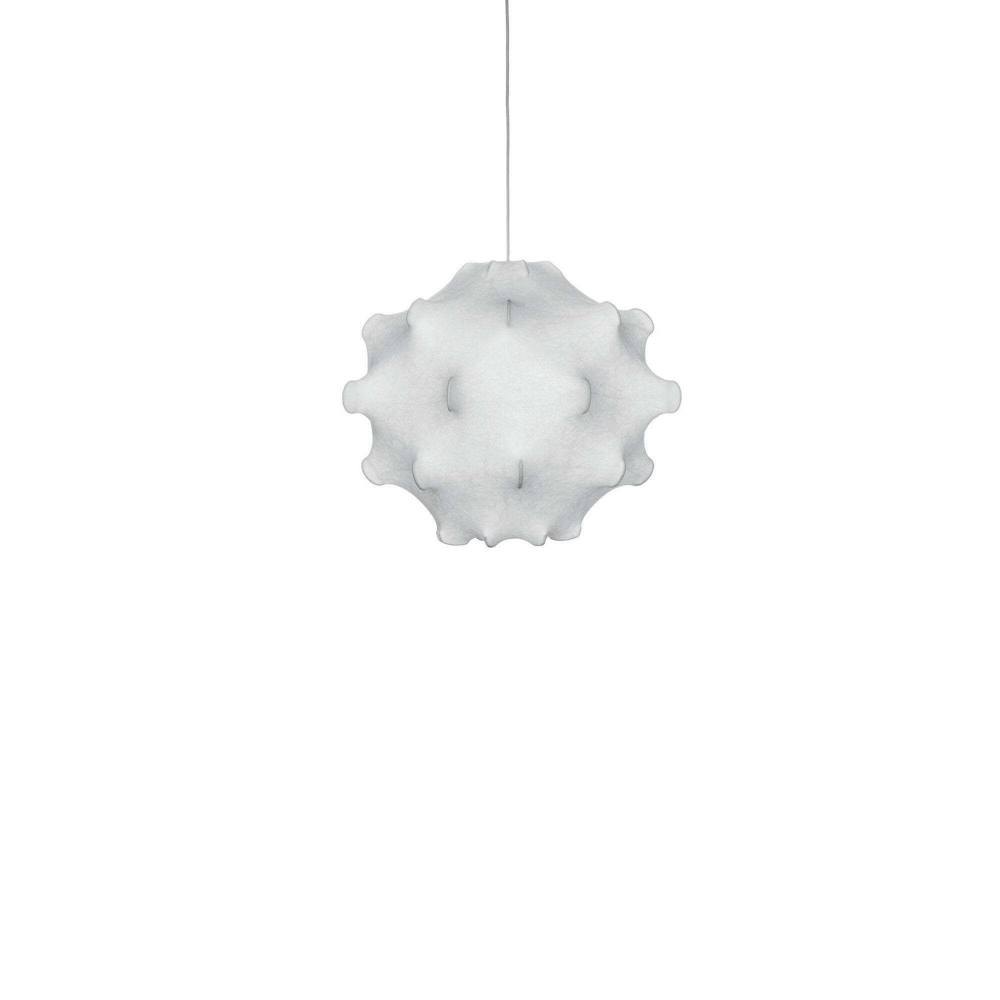
图：1960 年 Taraxacum 原版，蓬松的白色 cocoon 树脂球在钢架上成型，注意其表面为纤维膜而非金属片。图源：FLOS 法国站 Taraxacum 1 产品页。
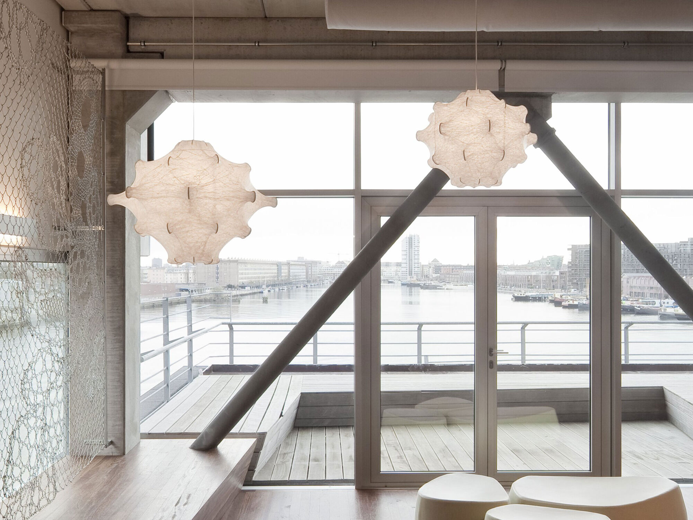
图：Taraxacum 1 悬挂在挑高空间中，透光茧膜把内部光源化成一团均匀的暖白。图源：FLOS 法国站 Taraxacum 1 产品页。
Taraxacum 88（1988）：二十面体上的六十只裸灯泡
1988 年，Achille Castiglioni 单人完成了 Taraxacum 88（此时 Pier Giacomo 已去世二十年）。它与 cocoon 毫无关系：20 块压制抛光铝三角片拼成一个二十面体骨架，60 只裸露的 Globolux 透明小灯泡直接插在三角片上，像蒲公英种子头一样向四周放射。FLOS 意大利官网原文写明 "20 块压制抛光铝三角支撑 60 只外露的透明 Globolux 灯泡"。有 S1（直径 80 厘米）与 S2（直径 105 厘米）两尺寸，重约 12.8 公斤。它是 FLOS 目录里最贵的量产吊灯之一，S1 美国售价 8285 美元，也是拍卖市场上的保值款 ——2026 年 2 月 Auctionet 一场灯具拍卖中，一只旧 Taraxacum 估价 200–300 英镑，最终以 950 英镑成交（个体证据，不代表整体行情）。
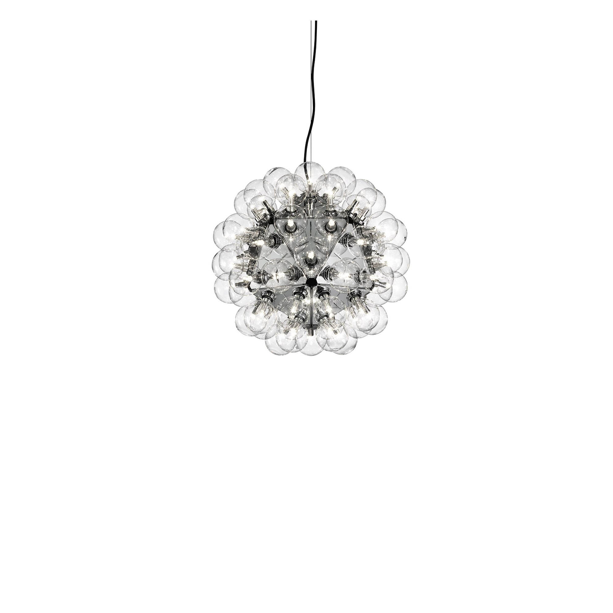
图：Taraxacum 88 由抛光铝三角片拼成二十面体，60 只裸灯泡直接外露，与 1960 年 cocoon 版完全不同。图源：FLOS 意大利站 Taraxacum 88 产品页。
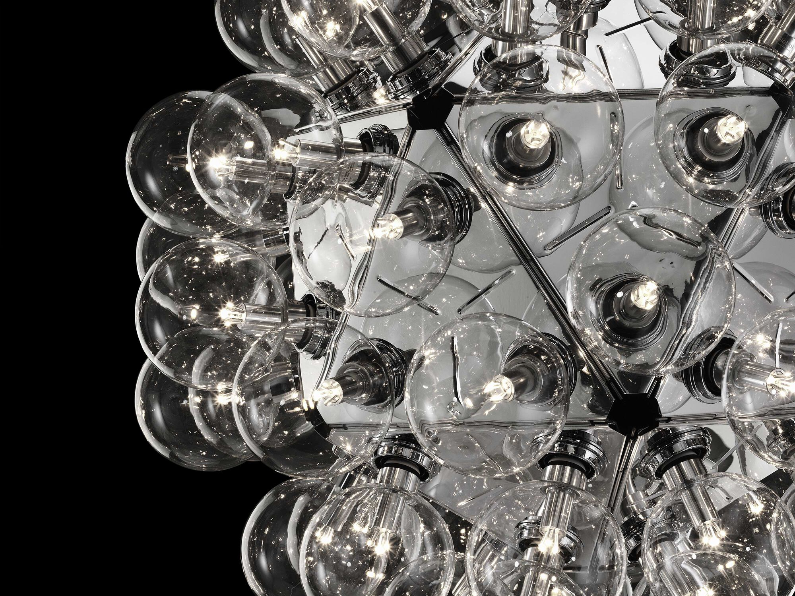
图：压制抛光铝三角片的拼接节点与 Globolux 灯座排列，灯泡无灯罩、直接发光。图源：FLOS 意大利站 Taraxacum 88 产品页。
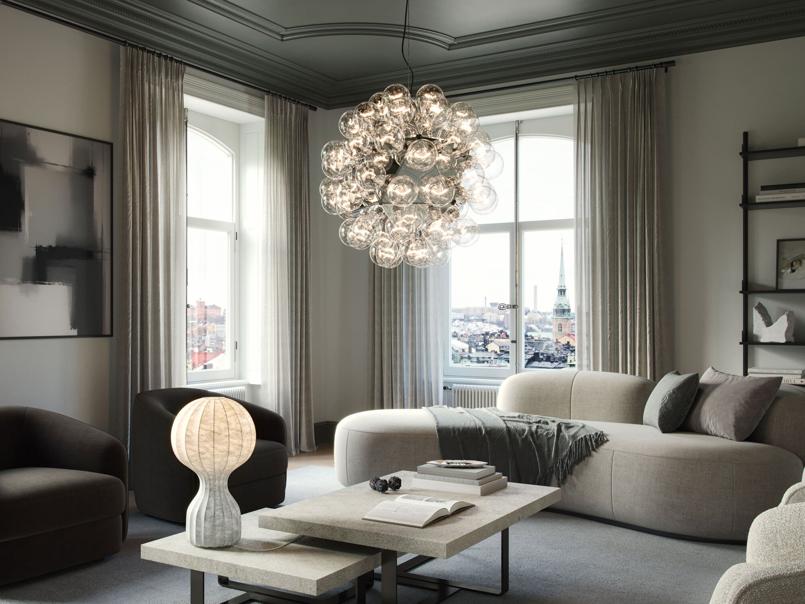
图：Taraxacum 88 点亮后 60 个点状光源向四周放射，在客厅中形成接近雕塑的体量。图源：FLOS 意大利站 Taraxacum 88 产品页。
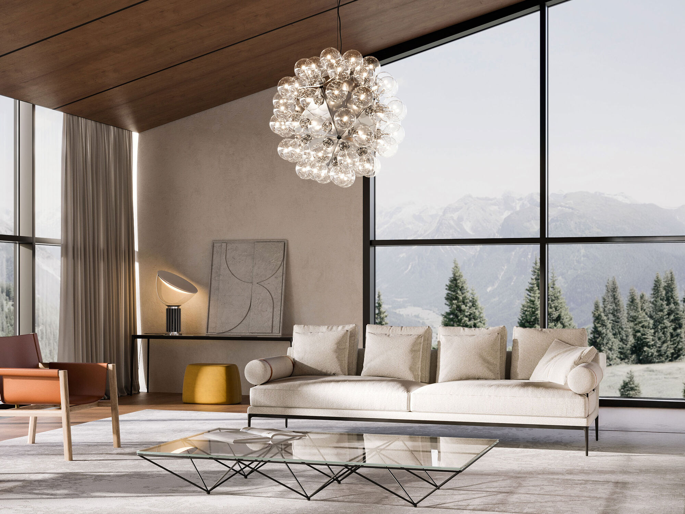
图：直径 80–105 厘米的球体与长餐桌的尺度关系，下方桌面被多点光均匀照亮。图源：FLOS 意大利站 Taraxacum 88 产品页。
Gatto（1960）：一只会发光的猫
Gatto 是最小号的 cocoon 灯，细钢腿撑起一只茧状小灯罩，名字在意大利语里就是 "猫"。现行在售以 Gatto Piccolo 桌面版为主：白色粉末喷涂钢架，cocoon 树脂喷在结构上作灯罩，带透明保护膜。它是 FLOS 官方 "cocoon 家族" 六款之一，MoMA Design Store 售价约 1020 美元，也是进入这个工艺家族最低的门槛之一。
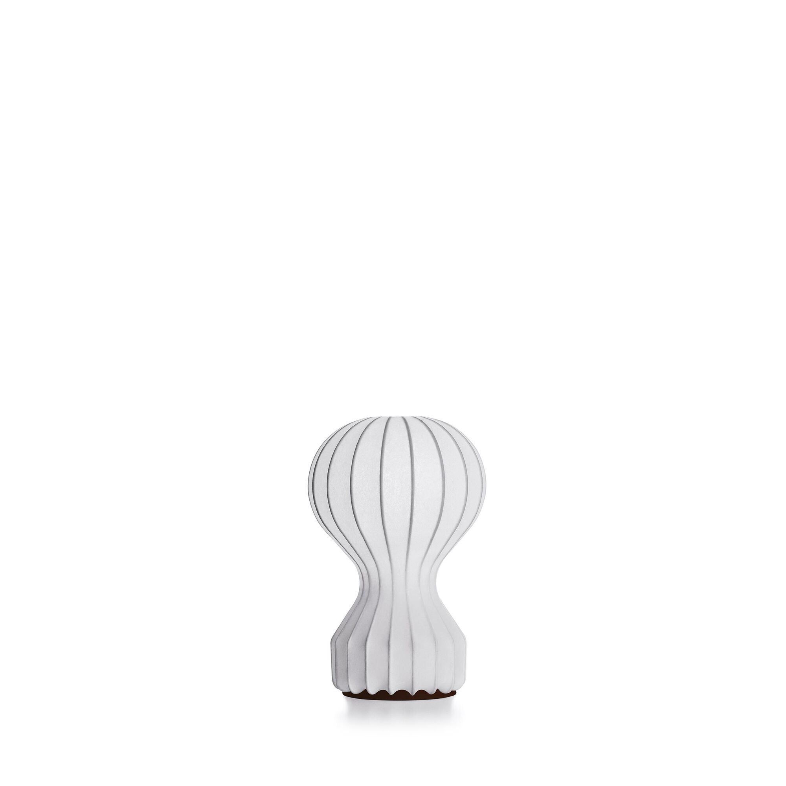
图：Gatto Piccolo 桌灯，细钢腿与 cocoon 茧状小灯罩构成 "猫" 的轻巧轮廓。图源：FLOS 官网 Gatto 产品页。
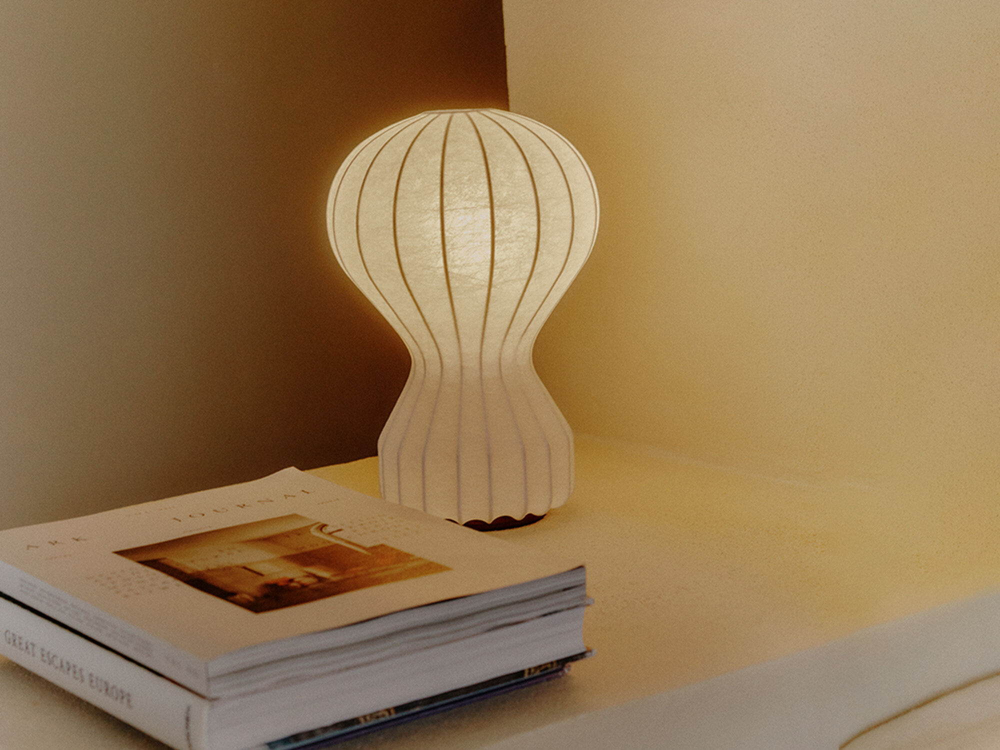
图：点亮后茧罩透出的暖光，cocoon 膜把点光源化成柔和的小团光。图源：FLOS 官网 Gatto 产品页。
Splügen Bräu（1961）与 Luminator（1954）：两件为空间而生的反射灯
Splügen Bräu 是店没了、灯名留下来的典型。1961 年兄弟俩在米兰 Corso Europa 为一家叫 Splügen Bräu 的啤酒馆兼餐厅做室内设计，灯为店而造：一只旋压铝抛物线碟，抛光后用透明漆保护，顶部开孔防眩光，参照的是老式普尔曼列车车厢顶灯，空间风格是战后回望新艺术运动的 Neo-Liberty。MoMA 1997 年展册形容它是 "保温瓶般亮面的悬挂灯再设计"。今天它仍是意大利餐厅与酒吧最常被指定的 FLOS 古董款之一，美国售价 820 美元，卤素款交付期长达 8–10 周。
Luminator 更早：1954 年设计，最初由 Gilardi & Barzaghi 生产（并非 Arteluce），1955 年获金圆规奖。结构极简 —— 一根细涂漆铁杆，顶端一只带反射罩的裸露灯泡向上投间接光，底部三条镀锌金属腿张开成三脚架。慕尼黑 Die Neue Sammlung 藏品记录写明 FLOS 于 1994 年将其重新投产；现行版配 LED 反射灯泡，新增明黄（灵感来自 Castiglioni 基金会标志色）与炭灰两色。
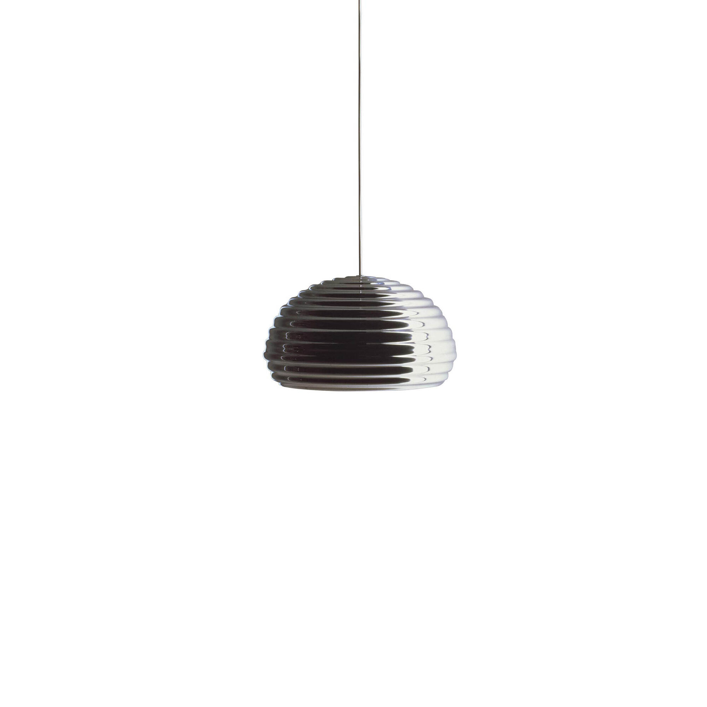
图：Splügen Bräu 旋压抛光铝抛物线碟与白色真空成型吸顶盘，亮面处理还原 1961 年的车厢顶灯质感。图源：FLOS 官网 Splügen Bräu 产品页。
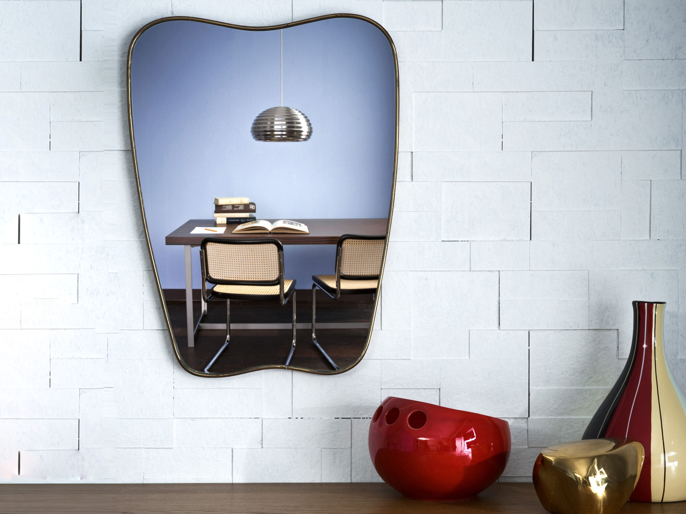
图：多只亮面铝碟在餐厅天花上聚拢，光线向下聚焦在桌面，正是当年啤酒馆的用法。图源：FLOS 官网 Splügen Bräu 产品页。
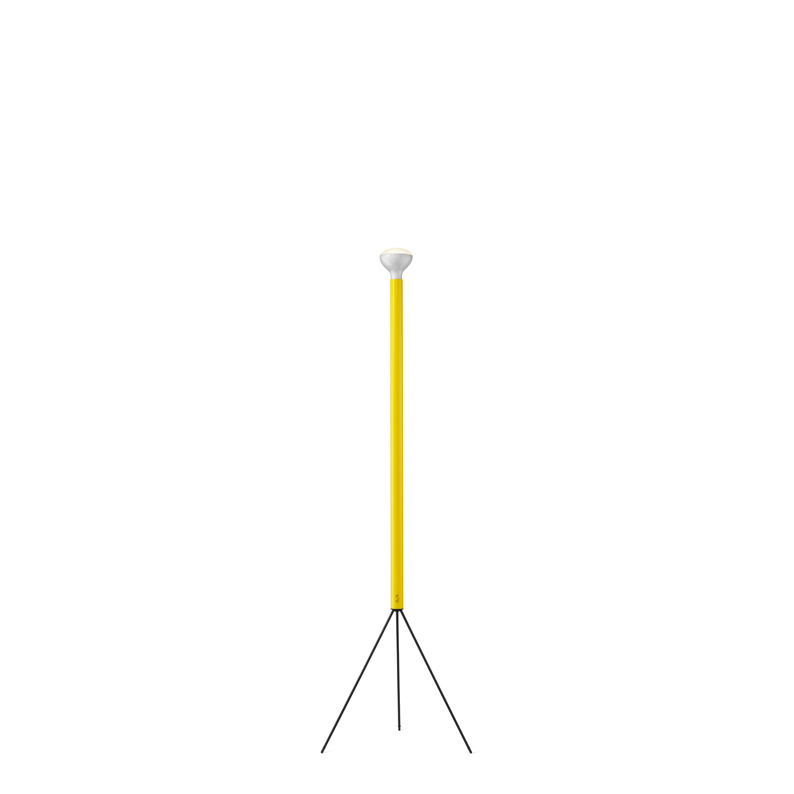
图：Luminator 三脚间接光落地灯，三根镀锌腿、细铁杆与顶部反射灯泡，1955 年金圆规奖、1994 年 FLOS 再版。图源：FLOS 官网 Luminator 产品页。
Romeo Moon（1996）：Starck 的双层玻璃月亮
Philippe Starck 与 FLOS 的合作始于 1980 年代中期的 Arà，Miss Sissi 的商业成功之后，Romeo Moon 是他第一个 "玻璃＋金属复合灯罩" 的代表作：1996 年先发吊灯，1998 年补桌灯与落地灯。结构为双层玻璃罩 —— 内层是酸蚀压制硼硅玻璃扩散器，外层是压制透明玻璃罩，带竖棱的模压玻璃罩由三钢索悬挂，官方称其 "把经典剪影带入当下"。它确立了 FLOS 1990 年代末 "诗意现代主义" 的产品线坐标，与 Morrison 的极简、Grcic 的工业路线构成三角。光源已从卤素过渡到 LED retrofit，部分欧洲市场已将其列为停产。
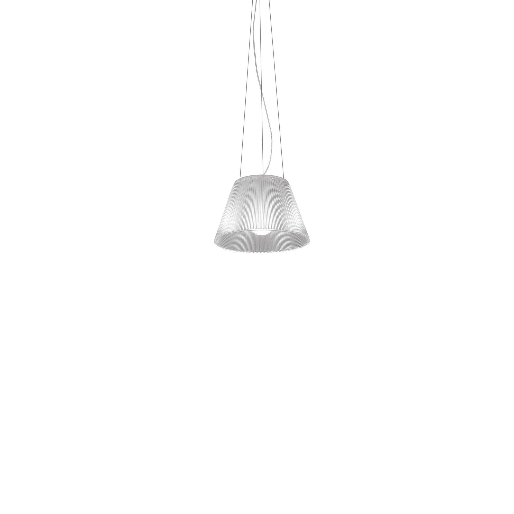
图：Romeo Moon S1 吊灯，带竖棱的双层玻璃圆盘由钢索悬挂，内层酸蚀玻璃负责漫射。图源：FLOS 官网 Romeo Moon 产品页。
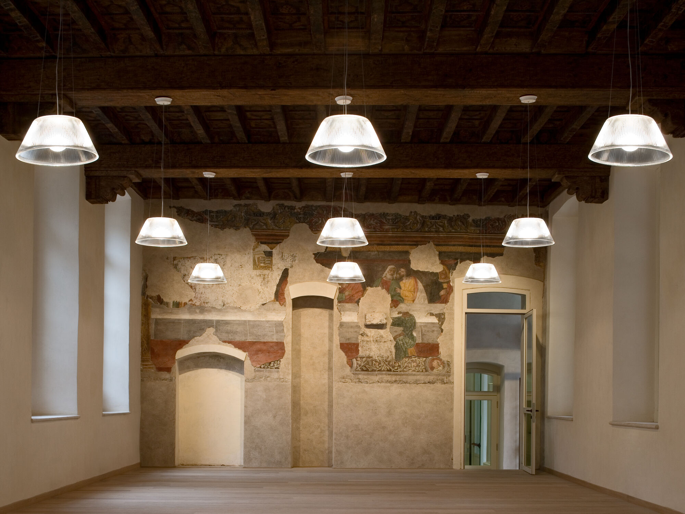
图：点亮后棱纹玻璃罩形成一圈均匀的暖光圆盘，光被内层硼硅玻璃扩散后柔化。图源：FLOS 官网 Romeo Moon 产品页。
Glo-Ball（1998）：一只被酸蚀的满月
Jasper Morrison 为 FLOS 试了将近五年都没成，最后是 Piero Gandini 拍板，砍掉两人手上另一个项目，全力开发吹制玻璃球家族 —— 这就是 Glo-Ball，官方与 Morrison 本人项目页均标注 1998 年设计（1999 年量产）。扩散器是外表面酸蚀的手工吹制闪乳白玻璃：先吹制成球，再外表面酸蚀，得到哑光柔光球，像悬在半空的满月。家族覆盖桌灯、落地、吸顶、壁灯、吊灯与 Mini 款，Morrison 说他们为 "几乎每一种可想象的使用情境" 做了版本。
Glo-Ball 是 Morrison 与深泽直人 2006 年提出的 "Super Normal" 哲学在照明上最经典的产品化样本：不引人注目、但日常好用。官方产品页直接把它与该哲学挂钩。它是 FLOS 当代线最亲民的入门经典之一，Mini 桌灯美国 315 美元起；玻璃球表面的指纹与清洁是二手社区长期的抱怨点。
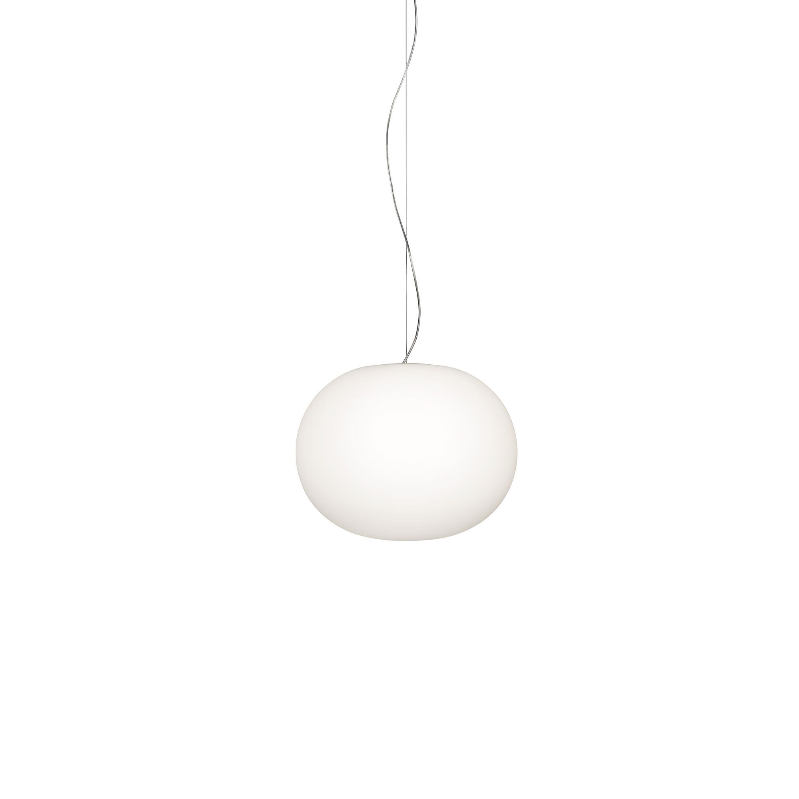
图：Glo-Ball 悬挂款，外酸蚀手吹乳白玻璃球呈哑光满月质感。图源：FLOS 官网 Glo-Ball 产品页。
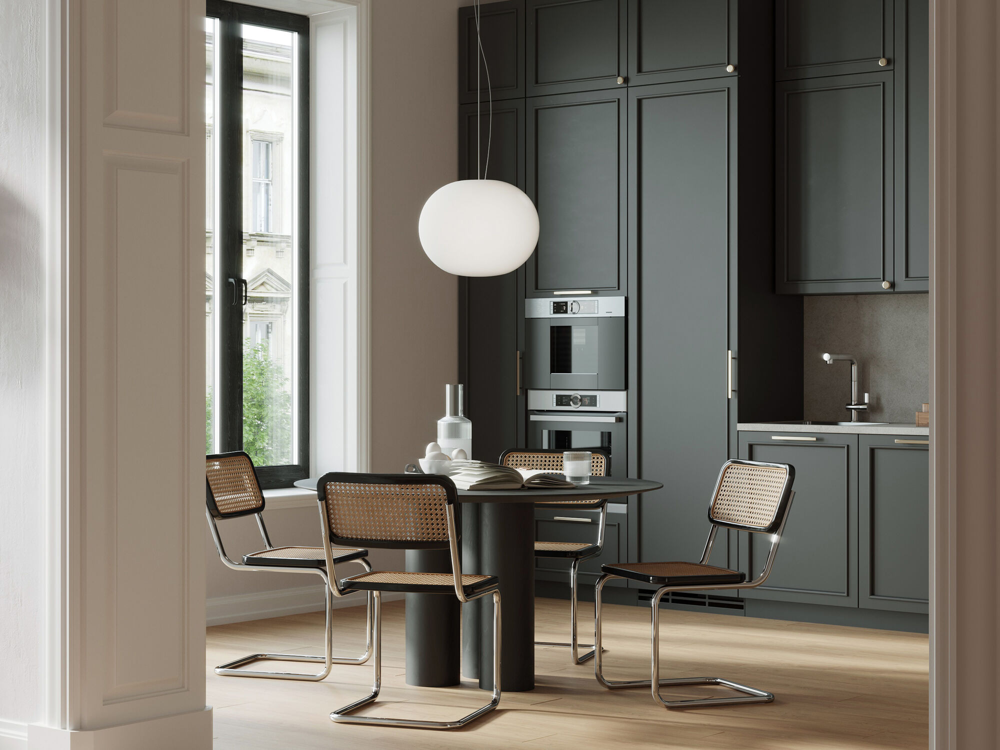
图：点亮的 Glo-Ball 像一盏满月，酸蚀表面把内部光源完全匀化为无眩光的球体。图源：FLOS 官网 Glo-Ball 产品页。
Mayday（2000）：一只 210 美元的多功能工具灯
Mayday 是 Konstantin Grcic 为 FLOS 做的第一件产品。名义上是桌灯，实际可放地、可挂、可拎走：锥形扩散器是注塑聚丙烯，把手兼做绕线器，扩散器上一个小三角缺口允许把灯挂在钉子上。名字双关航空求救信号 Mayday 与五月春日的乐观。它 2001 年获金圆规奖，被 MoMA 收藏，美国售价仅 210 美元，是 FLOS 全品牌的门槛价与礼品款主力，也承载 Grcic 所说 "民主的、有目的的设计"。2022 年推出防水的 Mayday Outdoor，改用工业级聚丙烯、无胶水组装、可完全回收，新增 Leaf Green 与 Mustard 配色。
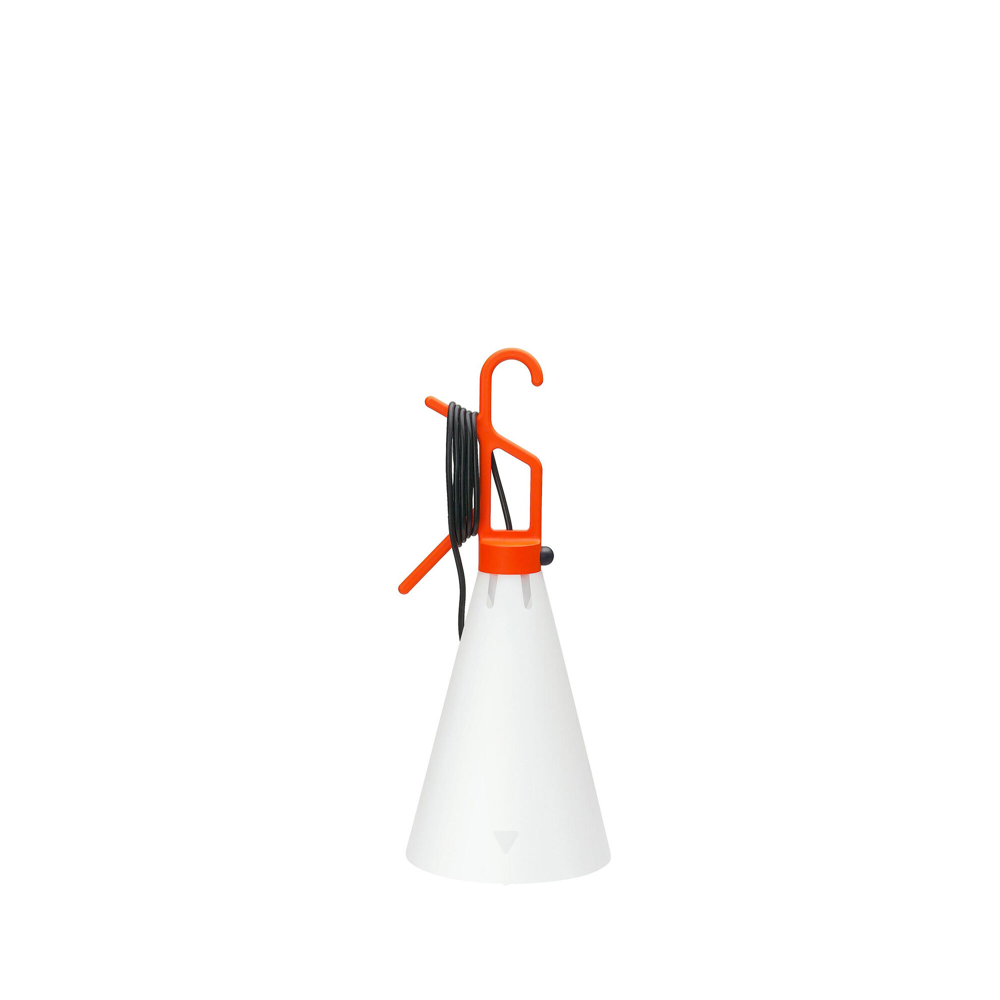
图：橙色 Mayday 聚丙烯便携灯，锥形扩散器、绕线把手与可挂钉子的三角缺口一目了然。图源：FLOS 官网 Mayday 产品页。
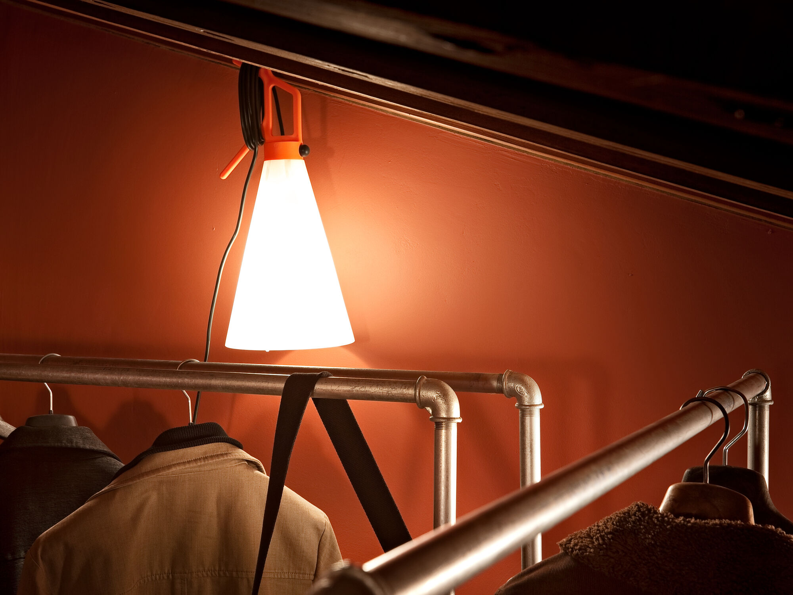
图：Mayday 被拎到工作区作为临时任务灯，灯头可拎、可挂、可平放，超出了 "桌灯" 的定义。图源：FLOS 官网 Mayday 产品页。
Skygarden（2007）：藏在极简外壳里的秘密花园
Marcel Wanders 的设计原点是旧居的一块古典石膏浮雕天花：他在 Stylepark 访谈里说，他把那块不需要浇水晒太阳、靠电灯暖光就能 "生长" 的天花称为自己的 "空中花园"，搬家时舍不得，于是把它 "偷" 进一盏灯里。外部是极简半球铝壳，内部是一整圈石膏穹顶雕花 —— 花卉、浆果、叶片图案并非手绘，而是光蚀刻加机械拉伸的 AISI 304 不锈钢片嵌在石膏内缘，扩散器为乳白玻璃。外壳有亮白、亮黑、锈棕、哑光金等饰面。站在灯外看是极简金属半球，走到灯底抬头才看见整座花园。这是 Wanders 在 FLOS 的代表作，承担产品线里的 "戏剧性 / 情绪" 角色，Skygarden 1 美国售价 4065 美元。石膏穹顶的重量、运输破损与只能干擦的清洁要求是其已知约束。
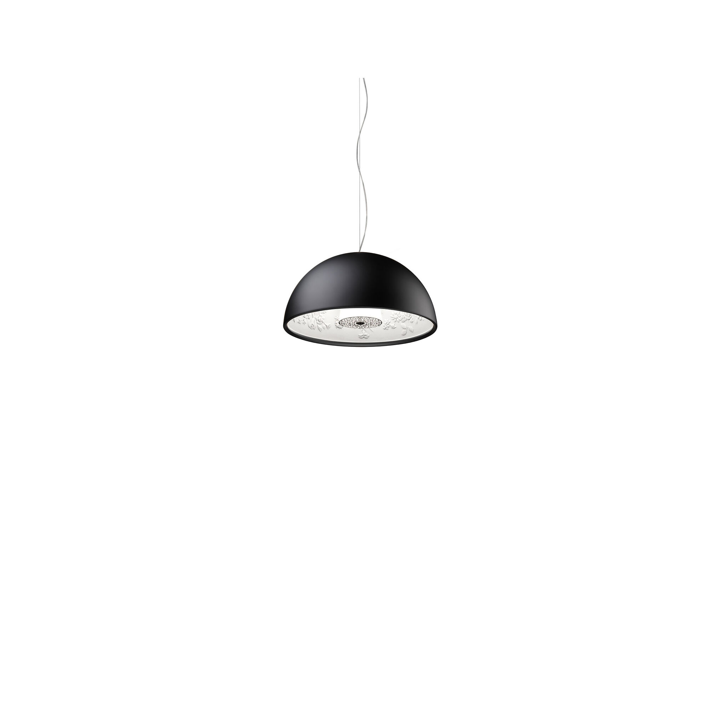
图：Skygarden 外观极简，只有一只光滑的半球形外壳与吸顶盘，所有装饰都藏在内部。图源：FLOS 官网 Skygarden 产品页。
图：仰拍 Skygarden 内部，石膏穹顶与光蚀刻不锈钢花卉浮雕在灯光下显现。图源：FLOS 官网 Skygarden 产品页。
图：穹顶外壳与吸顶结构细节，外壳为机械加工铸石膏喷白漆，外圈浇铸石膏成型。图源：FLOS 官网 Skygarden 产品页。
IC Lights（2014）：杂耍视频里冻结的平衡瞬间
Michael Anastassiades 是塞浦路斯裔英国设计师，语言以几何、平衡、克制著称。IC Lights 的起点来自一段 YouTube 视频：他在 FLOS 规格书引用的访谈中说，"我看到一个接触杂耍艺人的视频，球在他身上旋转，完美到你几乎看不见它们在动 —— 看起来完全平衡、完全静止。这就是我的起点。" 于是一根斜杆的末端，用最细的连接点托着一颗乳白玻璃球，像球在表演中被冻结。
框架有黄铜、镀铬、黑钢三种表面，球为吹制乳白玻璃；家族覆盖桌灯（T1/T2）、吊灯（S1/S2/S3）、落地（F1/F2）、墙顶与户外款。需要说明的是，"IC" 三个字母在 FLOS 官方页、规格书与设计师访谈中从未展开释义，坊间流传的 "Intentional Coincidence" 等说法没有权威出处，不应写成事实。2024 年十周年系列把框架改为 24K 镀金、每件由设计师签名编号。它是 FLOS 2010 年代后被复制最多的系列；LED 不可换、调光器外置在电源线上是常见的负面评价。
图：IC Lights S1 黄铜框架吊灯，细杆末端以极小接点托住乳白玻璃球。图源：FLOS 官网 IC Lights 产品页。
图：黄铜 IC Lights 在起居空间中的平衡构图，玻璃球看似悬浮在杆端。图源：FLOS 官网 IC Lights 产品页。
图：落地与吊灯同场出现，杆与球的语言在不同尺度上重复。图源：FLOS 官网 IC Lights 产品页。
图：暗调空间里只剩杆的剪影与一颗发光的球，呼应 "冻结的平衡瞬间"。图源：FLOS 官网 IC Lights 产品页。
String Light（2014）：一根划过空间的直线
String Light 与 IC Lights 同为 2014 年作品（并非部分资料所称的 2017 或 2018 年）。灯头是锥形或球形压铸铝外壳，外覆透明 soft-touch 清漆，配乳白聚碳酸酯扩散器；悬吊系统是一根 12 米或 22 米长、Kevlar 增强的同轴电缆，从天花板一直拉到地面或墙面，灯头可以停在电缆任意高度。灯不再 "挂在天花板下"，而是 "卡在一根划过整个空间的直线上"。现行 SKU 已带 Casambi Ready 智能调光，系统按灯头、电缆长度、电源接入方式分项计价，Sphere 款美国 1665 美元起。需要高处作业、电缆需现场裁切，是工程渠道的常见抱怨。
图：String Light 锥形灯头白色款，细长同轴电缆从灯头顶部一直延伸。图源：FLOS 官网 String Light 产品页。
图：两根细电缆垂直划过素色墙面，锥形与球形灯头悬停在不同高度，钢丝本身成为构图的一部分。图源：FLOS Professional String Light 家族页。
Captain Flint（2015）：大理石底座与海盗船长
Captain Flint 是 Anastassiades 的落地灯：杆与旋压锥形灯头为烤漆钢或拉丝黄铜，扩散器是注塑乳白光刻纹 PC，底座是白色 Carrara 或黑色 Marquina 大理石圆柱；电缆 260 厘米，脚踏开关可开关并在 10%–100% 调光，现行 LED 为 20W、554lm、2700K，可在阅读灯与氛围灯之间切换。命名被广泛认为指向《金银岛》里的海盗船长（Long John Silver 的鹦鹉也叫 Captain Flint），但设计师本人与 FLOS 官方未直接确认这一出处，只能作为待核说法。户外版 B1 同年推出，用 316L 不锈钢或抛光黄铜、经化学转化处理抗腐蚀，是 FLOS Outdoor 的代表作；室内款美国 2625 美元、户外高柱版 3865 美元。
图：Captain Flint 室内落地灯，细长杆身、旋压锥头与白色 Carrara 大理石圆柱底座。图源：FLOS 官网 Captain Flint 产品页。
图：Captain Flint 置于阅读角，锥头向下投射可调的直接光，大理石底座同时是视觉锚点。图源：FLOS 官网 Captain Flint 产品页。
Noctambule（2019）：白天隐形，夜晚发光
Noctambule 取自法语 "夜猫子"。Grcic 给它的官方描述是：白天，透明玻璃圆柱几乎消失在环境里；夜晚，模块连接处的 LED 环点亮，拼出可以从三个模块一直长到接近 3.2 米的光柱。主体是透明手工吹制玻璃圆柱互锁，节点是压铸铝环连接器，内部 hydroformed 钢横向臂，外圈是注塑光学乳白硅橡胶环 ——LED 藏在环里，光从节点溢出，玻璃柱本身不发光；顶端可选锥形或半球碗形扩散器。吊灯 36W、973lm、2700K、CRI>90，获 Interior Design 2019 年度 Best of Year。多模块吊灯系统总价常达 5000–15000 欧元，S1 低筒锥等配置被标为 Offline Exclusive，仅门店发售。它最被反复提及的负面口碑是透明吹制玻璃表面的指纹、水渍与清洁痕迹极明显，且 LED 集成在铝环内、维修依赖售后。
图：Noctambule 透明玻璃圆柱模块，节点处的压铸铝环与乳白硅胶环是发光单元。图源：FLOS 官网 Noctambule 产品页。
图：多模块堆叠的 Noctambule 从天花板垂下，白天接近透明、入夜成为发光柱。图源：FLOS 官网 Noctambule 产品页。
Wireline（2019）：橡胶电缆与玻璃管的材料对话
Wireline 是 Formafantasma（Andrea Trimarchi 与 Simone Farresin）为 FLOS 做的首个量产灯。这对以 "材料考古" 著称的设计师让一根透明挤出玻璃圆管（内插乳白 PC 扩散器）水平悬在空间中，两端是 CNC 加工不锈钢套，而承吊它的不是钢索，是扁平的挤出橡胶电缆本身 —— 粉色或森林绿的工业橡胶直接承担悬吊结构，与玻璃的轻盈形成反差。吸顶盘注塑 PC 并与电缆同色，集成电子件支持 PUSH 调光，获 Interior Design 2021 年度 Best of Year。需要纠正的是：Wireline 只有悬吊版，没有桌灯或落地灯；同工作室 2018 年的 Wirering 是壁灯，2025 年的 SuperWire 才把语言扩展到桌、吊、落地的模块化家族。粉色与绿色橡胶是强辨识度，也是强风格符号，在中性空间中可能突兀。
图：Wireline 粉色款，透明玻璃圆管由粉色扁平橡胶电缆直接悬吊，电缆颜色与吸顶盘一致。图源：FLOS 官网 Wireline 产品页。
图：点亮后玻璃管呈线性暖光，粉色电缆在天花与灯体之间形成一条柔软的垂线。图源：FLOS 官网 Wireline 产品页。
Infra-Structure（2020）：当装饰灯挂进工程轨道
Infra-Structure 是比利时建筑师 Vincent Van Duysen 为 Flos Architectural 设计的管状模块化轨道系统：磁吸固定加机械安全锁，灯头可选择聚光、线性环境光、装饰性 pendant、阅读灯等，支持 FLOS Control App 与 DALI 协议。Stylepark 评价它是 "对典型包豪斯语言的重新诠释…… 以工业美学的管状结构在空间中织出光的网络"。它的战略意义大于产品本身：这是第一次把装饰线的灯头（IC、String Light、Captain Flint 的语言）与工程级磁吸轨道合流 ——FLOS 用设计师审美做轨道系统，正面对抗 ERCO、XAL、iGuzzini 等德国工程照明品牌。2024–2025 年的 Episode 2 又扩展了垂直与水平元素，形成三维构型。
图：磁吸灯头模块标注图，Multi Spot Mini、Light Tube、Spot、玻璃下照灯与面板灯可在同一条管上互换。图源：FLOS Professional Infra-Structure 故事页。
图：住宅板条天花下的 Infra-Structure，黑色轨道与室内木作、金属灯具共存，证明系统也可服务家庭空间。图源：FLOS Professional Infra-Structure 故事页。
Camouflage（2016）与户外线：让灯消失在墙里
Flos Outdoor 成立于 2015 年 6 月收购 Ares 之后，户外灯的逻辑与装饰灯完全不同：防水等级（IP65/IP67/IP68）、防眩光精密光学、12°–120° 光束角、CRI 80+，走景观与建筑承包商渠道。Piero Lissoni 2016 年设计的 Camouflage 是其中最有 FLOS 气质的一款：墙装圆形灯，前面板用 Crema d'Orcia 石灰石、玄武岩等多种石材饰面，关灯时与墙面石材融为一体，"在场与缺席" 同时成立。
图：Camouflage 140 圆形户外壁灯，石材面板与墙面材质一致，关灯时近乎隐形。图源：FLOS 官网 Camouflage 产品页。
图：Camouflage 在外墙上的洗光效果，灯体嵌入石材墙面，只在夜间显出圆形光斑。图源：FLOS 官网 Camouflage 产品页。
SuperWire（2025）：材料研究的系统化
2025 年，Formafantasma 把 Wireline 的语言扩展为 FLOS 首个模块化家族 SuperWire，覆盖桌、吊、落地与建筑悬挂形态。如果说 Wireline 是一件材料宣言，SuperWire 就是把宣言变成可配置系统的尝试 —— 它标志着 FLOS 对研究型工作室的使用方式，已从 "单件展品" 转向 "平台型合作"，与 Infra-Structure 代表的系统化趋势在装饰线内部汇合。
图：SuperWire S3 钢色模块，线性灯体与 CNC 接头延续 Wireline 的玻璃与金属语言。图源：FLOS 官网 SuperWire 产品页。
图：SuperWire 模块在空间中线性延伸，装饰灯具开始具备轨道系统的可配置性。图源：FLOS 官网 SuperWire 产品页。
08 Aesthetics 美学：白色、铝色与一束被塑形的光
中性基底：白、铝与大理石
FLOS 没有 "品牌红" 式的标志色，它的色彩系统是一套中性基底：白色 Carrara 大理石、阳极氧化铝的银白与哑白、Glo-Ball 的酸蚀乳白、Noctambule 的透明玻璃加乳白硅胶。当代款的颜色策略（IC 的黄铜、Wireline 的粉与森林绿、Mayday 的橙与芥末黄）都是在这个中性基底上的点缀，从不铺满全线。品牌的情绪由材料而不是色号建立：大理石的重量感、旋压铝的镜面感、cocoon 的纤维雾感、口吹玻璃的手工气泡感。
光的氛围：间接光、漫射与雾化
FLOS 光的共同语法是 "光先被塑形，再照亮人"。Arco 把光打向桌面、Taccia 把光打向天花板再反射、cocoon 家族把光雾化成一团、Glo-Ball 把光收成满月、Toio 像车灯一样向上反射。直接、刺眼的点光源在这个目录里是少数。官方广告摄影长期采用暗调空间加单点光源的氛围：不拍灯本身，拍灯打在墙上、桌上、人脸上的光；Noctambule 的传播则完全建立在 "白天隐形、夜晚发光" 的昼夜对比上。
图：cocoon 树脂喷涂在钢架上的工艺特写，纤维层在光源外形成半透膜 ——FLOS 光氛围的物质基础。图源：FLOS 官方 1960 哲学页。
图：一排手工吹制玻璃球，FLOS 的口吹玻璃外协给穆拉诺工坊，吹制工匠的手工痕迹保留在玻璃壁上。图源：FLOS Professional Luce Sferica 产品页。
字标、画册与 "Flos Stories"
FLOS 字标是四个无衬线大写字母，黑色或深灰纯色、字距宽松，长期保持高度稳定；字标演变的具体年代与设计师在官方档案中没有完整记录（二手资料提到 1990 年代中期由品牌顾问 Bruno Le Moult 主导改版，待核实）。2023 年起，FLOS 用线上杂志 "Flos Stories" 取代传统按 SKU 排版的 PDF 画册，内容按项目、设计师与展览组织 —— 这是品牌把自己从 "灯具供应商" 叙事转向 "光的文化出版方" 的明确动作。
橱窗、展位与旗舰店
FLOS 的空间语言与产品语言同源：1969 年 Achille Castiglioni 亲自设计了米兰 Corso Monforte 旗舰店的第一个橱窗；2017 年 Calvi Brambilla 设计的 FLOS 展位获 Salone del Mobile "Best Display"；2025 年 Euroluce 展位以 "The Light of the Mind" 为题，做成内省式的房间序列。2024 年 11 月启动的 "Flos Hosting Milan" 与 Fosbury Architecture 合作，把专业展厅变成文化对话场所。这些空间延续了暗调、单点光、雕塑化陈列的统一语法。
图：1960 年代 FLOS 展厅活动，吊灯下的社交空间是 "灯即场所" 叙事的早期版本。图源：FLOS 官方 1960 哲学页。
09 Design 设计：观察、借用与六十年的连续生产
设计哲学：观察、减法与幽默
FLOS 眼中的设计不是装饰光源，而是 "用光作为可塑形的材料，重组人与空间的关系"。这套信念有三层来源：Castiglioni 兄弟 1950 年代在米兰的现成品实践；Brescia 工业区 "给设计师最大自由" 的制造结构（官方德语历史页原文如此表述）；以及 Piero Gandini 把公司重新定位为光的文化平台。
在功能、形式、情感、技术与时间之间，FLOS 的站队非常具体：功能优先，但功能被重新定义 ——Parentesi 不做 "好看的壁灯"，而是解决 "灯头如何在任意高度停住"；情感与幽默是功能的一部分，不是装饰层 ——Arco 的搬运孔、Toio 的系缆羊角、Mayday 的挂钉缺口都是工程决定；技术为经典让路，但不为情怀牺牲合规 —— 卤素被欧盟法规淘汰后，每款经典都出 LED 版，而不是放任用户自改；时间维度上，品牌押注 "可继续生产的经典"，1962 年的灯今天仍在 Bovezzo 下线。Interni 杂志 2024 年用三个词概括 Achille 的方法："好奇、乐趣、共情"，并引用 Giovanna Castiglioni 的话说他 "用减法工作，寻求思想的透明性，结果是观者的惊讶，以及一个好解决方案带来的必然微笑"。
图：Achille Castiglioni（1918–2002），他 1969 年起在米兰理工任教至 2001 年，工作室与藏品现由 Fondazione Achille Castiglioni 保管。图源：FLOS 官方 1960 哲学页。
图：年轻的 Castiglioni 在绘图桌前工作。FLOS 多数经典的结构与草图都出自米兰这间工作室。图源：FLOS 官网 Castiglioni 设计师页。
图：Achille Castiglioni 1962 年的 Taccia 手绘工程草图，倒扣玻璃碗与柱体结构在草图阶段已经成型。图源：FLOS 官方 1960 哲学页。
CMF：四种招牌材料的决策逻辑
第一种是 Carrara 大理石。Arco 的底座为什么用大理石而不是更便宜的铸铁：它既要压住两米拱臂的前倾力矩，又同时是视觉底座和意大利文化符号 —— 它是 Michelangelo 的石头，是白色的。官方备件体系单独销售大理石底座（F0310000，约 60 公斤），说明这是可更换的易损件。
第二种是阳极氧化铝与 zapon 清漆。Arco、Splügen Bräu、Taccia 的反射器沿用 1960 年代的旋压铝与硝化纤维基 zapon 透明漆工艺，抛光到镜面还原原版质感；Taccia 灯体提供黑、哑白、银阳极、铜阳极四种表面，反射器外亮内哑以分别控制环境光与工作光的反射率。
第三种是 cocoon 树脂，已在工艺章节详述：在旋转钢架上喷涂聚酰胺树脂、纤维附着成型、外层透明保护，今天仍由手工工匠操作，每一件都不重复。第四种是穆拉诺口吹玻璃，外协给穆拉诺工坊（FLOS 并不自有玻璃窑，工坊名称未公开）：Taccia 的玻璃碗、Glo-Ball 的酸蚀乳白球、Noctambule 的透明圆柱都来自这一供应链。注塑聚丙烯（Mayday）、不锈钢（Arco 臂）、张拉钢索（Parentesi）则承担大众化与结构化的部分。
制造：三个基地与四条业务流
FLOS 有两个运营总部和一个户外基地：Bovezzo（Brescia）负责 Decorative 线的总装、cocoon 喷涂与金属加工；瓦伦西亚 Riba-roja de Túria 的 Antares 负责 Architectural 系统的研发与组装；Bernareggio（原 Ares 团队）负责 Outdoor。自制之外，大理石在 Carrara 采石切磨、口吹玻璃外协穆拉诺、LED 驱动与电控外购。FLOS 单体 2024 年约 618 名员工、2.24 亿欧元收入。
图：1970 年代的 Bovezzo 新厂，FLOS 自 Nave 迁入后，装饰线在此连续生产至今。图源：FLOS 官方品牌历史页。
品牌主张与产品落点
| 品牌主张 | 产品落点 |
|---|---|
| 设计 = 观察日常物，把已有的东西借过来当灯 | Toio（汽车大灯＋钓鱼竿导环＋系缆羊角）；Snoopy（漫画剪影＋大理石斜面）；Arco（街灯悬臂） |
| 光先被塑形，再照亮人 | Taccia（可转向玻璃碗反射间接光）；Glo-Ball（酸蚀乳白满月）；cocoon 家族（树脂雾化） |
| 不为天花板打洞，灯自己解决安装 | Arco（65 公斤大理石配重＋拱臂）；Parentesi（天花 - 地面张拉钢索摩擦定位） |
| 幽默是功能的一部分 | Arco 底座搬运孔；Mayday 三角挂钉缺口；Toio 外露变压器 |
| 经典可以连续生产六十年，坏了零件能换 | 大理石底座单独备件；各经典持续 LED 迭代；与 Castiglioni 基金会合作新色 |
| 用最手工的工艺做最量产的灯 | cocoon 手工喷涂、穆拉诺口吹玻璃、Carrara 切磨、zapon 清漆铝反射器 |
| 不做全屋智能生态，只做值得被看见的光 | 家用款以物理旋钮与钢索定位为主；DALI/Casambi 智能交给建筑线 |
| 从装饰灯拉伸到建筑、户外与定制，但基因仍是一件光的雕塑 | Infra-Structure、Camouflage、Bespoke 四业务流 |
10 Experience 体验：重量、仪式与维护的真实账
体验观：灯不亮时也是家具
FLOS 的产品不是 "开 / 关" 二元电器，而是空间里的光雕塑。体验由此展开：Taccia 靠转动玻璃碗改变反射方向，Arco 靠整根悬臂的位置决定光斑落在哪里，Parentesi 让人用手把灯头在钢索上滑到任意高度，Noctambule 不亮时是透明柱、亮时是光柱。调光交互也被刻意保持为机械动作：旋钮、钢索、脚踏，而不是 App—— 智能调光（DALI、Casambi、FLOS Control）主要存在于建筑线，家用款不主动接入全屋智能生态。
兑现与断裂：重量、安装与摆位
体验的断裂点首先是物理性的。Arco 65 公斤的官方搬运方式是 "两个人加一根木杆"，普通公寓电梯入户、旧公寓楼梯转角、木地板承重都是真实痛点，官方不提供配送安装，多数市场由经销商代办。Parentesi 需要在天花板与地面各固定一个夹具、钢索垂直绷紧，吊顶房、地暖房、租赁公寓都不适用。Taccia 约 50 厘米高、必须让反射器正对天花板才能打出正确的间接光，摆位错了光就难看。Noctambule 与 Wireline 的 Offline Exclusive 策略在体验上是双向的：它保证了现场看尺度与指导安装的服务，也意味着线上无法直接成交。
卤素退场、LED 化与备件
欧盟 ErP 法规 2012 年起禁售普通白炽灯、2016–2018 年分阶段禁售卤素灯。FLOS 的应对是为经典款逐个出 LED 版：Arco LED 2012 年（50 周年）、Toio LED、Taccia LED 与 PMMA 版、IC LED 等。但 LED 化存在体验代价：老款卤素 2700K 暖光与银色反射灯泡的光束角，并非简单换泡就能复刻，Arco LED 需要重新设计穿孔铝漫射器，设计媒体对 "光形变化" 的讨论一直存在；当代款（Noctambule、IC）的 LED 与电子件集成在结构内部，驱动或电路板损坏倾向整灯更换，而不是像机械结构那样可修。正面是备件体系：FLOS 美国站有独立备件频道，大理石底座、灯座组件、长臂、LED 灯泡均可单独购买，售后通过 support.flos.com 与经销商承接。
口碑：正面与负面
正面口碑集中在经典款的不可替代性与保值性。经销商（立场偏卖方，C 级）反复对比正品与仿品的差异：IC 正品的平衡感、玻璃厚度与黄铜氧化均匀度，Arco 仿品约四分之一在一年内出故障而正品二手残值高、备件可买。负面口碑集中在四点：一是溢价高，同尺度金属加玻璃结构在工程导向品牌处便宜 30–80%；二是经典款维护难，卤素款在欧洲因法规退场、备件依赖经销商；三是仿冒极多，中国电商平台存在大量千元级 "Arco 同款"，辨别与维权成本高；四是电子件维修倾向整灯换。这些口碑多来自经销商博客与社区个体帖，样本有限，不构成整体结论，但指向的问题与产品结构一致。
11 Competition 竞品：九家品牌与两种照明路线
集团归属
FLOS 自 2018 年 11 月起属 Investindustrial 与 Carlyle 合资的 Design Holding（2024 年更名 Flos B&B Italia Group）。集团 2024 年口径含 Flos、B&B Italia、Louis Poulsen、Maxalto、Arclinea、Azucena、FENDI Casa、Lumens、Audo 九个品牌。需要更新的是：2026 年 6 月 11 日集团签约将 Louis Poulsen 全部股权以约 4.7 亿欧元卖给丹麦基金会投资公司 Chr. Augustinus Fabrikker，9 月 16 日完成交割；H1 2026 财报已将其列为终止经营业务。这意味着 Louis Poulsen 从集团兄弟品牌重新变回独立竞争对手。
品牌层与产品层竞品
| 品牌 | 国别 / 归属 | 创立 | 定位 | 与 FLOS 的关键差异 |
|---|---|---|---|---|
| Artemide | 意大利，Gismondi 家族独立 | 1960 | 工程师美学，光质量与 Human Light | 更工程、更可维修，同档价格低 30–80%；FLOS 更雕塑、更有叙事 |
| Foscarini | 意大利，家族企业；2022 年收购 Ingo Maurer 90% | 1981 | 穆拉诺吹玻、感性有机形态 | 吹玻工艺与色彩实验；FLOS 材料更综合、经典目录更深 |
| Luceplan | 意大利，2010 年起属 Signify | 1978 | 建筑师理性照明，Sarfatti 谱系 | 工业集团背景与办公工程渠道；FLOS 保留设计品牌独立性 |
| Oluce | 意大利，Verderi 家族 | 1945 | 老派几何再版，Atollo 为招牌 | 产品线窄、无建筑系统；FLOS 四业务流 |
| Ingo Maurer | 德国，2022 年起 Foscarini 持股 90% | 1968 | "光之诗人"，实验装置语言 | 装置化、单件艺术；FLOS 是可量产的设计家具 |
| Louis Poulsen | 丹麦，2026 年 9 月起属 Chr. Augustinus Fabrikker | 1874 | 北欧无眩光哲学，PH 系列 | 三层消光反射 vs FLOS 直接光 / 雕塑光 |
| Nemo Lighting | 意大利 | 1993 | 现代主义大师未投产图纸的官方出版方 | 大师档案运营；FLOS 是当代设计师平台 |
| Tom Dixon | 英国，独立 | 2002 | 工业手工与材料实验，英国都市感 | 生活方式全品类、入门价更低；FLOS 专注照明 |
| Moooi | 荷兰 | 2001 | 折衷、戏剧、叙事装饰 | 同展厅里的风格反差项；FLOS 更克制 |
术语注释：contract（工程渠道）—— 面向酒店、办公、零售等项目的大宗照明供应与定制业务，按项目而非按件成交。
从坐标看，Artemide 是 FLOS 最直接的同国对手：两者都创立于 1960 年前后、都有金圆规奖经典和博物馆馆藏，但 Artemide 自建技术团队（Tolomeo、Tizio 由 Richard Sapper、Alberto Meda 等工程师型设计师完成），FLOS 更依赖外部明星网络。Foscarini 与 Luceplan 在中端项目清单上频繁同场，Louis Poulsen 代表北欧光学哲学的另一极，Ingo Maurer 与 Nemo 分别占据装置艺术与大师档案的生态位。FLOS 的独特位置在于：它是唯一同时拥有 "Castiglioni 级现代经典密度" 和 "当代明星设计师网络" 的品牌，并用 Infra-Structure 把雕塑感向工程市场延伸。
12 Strategy 战略：经典目录、建筑系统与集团化的取舍
技术路线与产品规划
在 LED 与智能化上，FLOS 是 "被迫跟进" 而非 "主动引领"（置信度：高）。官方历史页承认 LED 入侵是 "第二场生产革命"，且从 2000 年代初就开始应对；但它的 LED 化主要发生在经典款生命周期里（换光源、再设计漫射器），而不是像 Artemide 那样以 LED 模块为起点做新品。智能调光（DALI、Casambi、FLOS Control）由瓦伦西亚建筑线承接，装饰家用款坚持物理交互。这一选择保住了经典的纯粹性，代价是把 "智能照明" 的品牌心智让给了工程品牌和消费电子品牌。
定位与品类路线的演进
FLOS 的第二次增长曲线在建筑、户外与定制（置信度：高）。2005 年控股 Antares、2015 年收购 Ares、2020 年 Infra-Structure 合流装饰与工程，是这条线的三个节点。它同时在 2021 年收购 Lumens 内化北美渠道。逻辑很清楚：装饰灯靠品牌拉力但受地产与消费周期影响大，工程线客单价高、复购来自同一项目多标段，是对冲周期的方向。问题在于品牌基因仍是 "一件光的雕塑"，做系统化工程照明要与 ERCO、iGuzzini、XAL 这类纯工程玩家硬碰，组织能力与渠道打法都不同。
设计语言与材料体系的演进
设计师网络策展模式是 FLOS 的核心资产，也是它的主要风险（置信度：中）。优势是每个设计师带自己的语言，品牌不赌单一风格，博物馆馆藏与奖项自然累积 ——Parentesi（1979）、Mayday（2001）、Belt（2022）、Bilboquet（2026）四座金圆规奖，Arco 2016 年再获金圆规奖职业生涯特别荣誉，MoMA 馆藏多件。风险是内部自有设计能力相对薄弱，明星设计师会流向竞品，而 Grcic、Morrison 一代已高龄，下一代签约对象（Formafantasma、Philippe Malouin 等）尚未形成同等的博物馆级影响力。
品牌影响力与行业坐标
Arco 的法律史可能是 FLOS 对行业最大的制度性贡献：2011 年欧盟法院 C-168/09 判决确认具备艺术属性的工业设计可享著作权保护，2012 年阿姆斯特丹法院进一步在荷兰法下保护 Arco。这提高了所有意大利经典设计被仿制的法律门槛。品牌的文化运营同样系统：2023 年以 Flos Stories 取代画册、Flos Hosting 沙龙化展厅、Euroluce 展位连续获奖、Bespoke 项目（如巴黎 Casa Italia 用洞石与埃特纳火山岩底座）在高端 hospitality 中持续曝光。
关键取舍与风险
第一，集团化后的回撤信号。2026 年 6 月以约 4.7 亿欧元出售 Louis Poulsen，官方理由是 "优化品牌组合、重新配置资本支持增长"，实质是从 "多品牌照明组合" 回撤到 "FLOS＋B&B Italia 双旗舰"（置信度：中）。第二，周期下行的真实压力：集团 H1 2026 收入 2.708 亿欧元、同比下降 7.3%，净亏损 1040 万欧元（财务费用 4110 万欧元是主要拖累），财报点名了中国区消费信心走弱、美国关税不确定性与中东合同项目延迟；Contract 收入同比下滑 13.4%，官方解释为项目交付节奏而非需求崩塌。第三，仿冒与价格锚：Arco 的著作权判决解决了欧盟范围内的法律问题，但中国电商平台的仿品规模仍未有效遏制。第四，重资产工艺的供给脆弱性：cocoon 手工喷涂、穆拉诺吹玻、Carrara 切磨的产能与工匠传承，是放量的天然天花板。官方对下半年复苏仍表示 "有信心"，依据是在手订单与商业计划，但这是公司口径，需以后续财报验证。
13 视频与访谈资料
FLOS 官方 Stories 频道（产品故事、项目、欧展虚拟导览）：https://professional.flos.com/en/global/stories/
Arco 设计故事（含 2011 版权保护与 2012 LED 版时间线）：https://www.flos.com/en/us/stories/arco-a-design-icon-us.html
Parentesi 设计故事（含 Pio Manzù 草图与 Castiglioni 改动说明）：https://flos.com/en/us/stories/parentesi-a-design-icon-us.html
Eames Institute 对 Giovanna Castiglioni 的口述访谈（Achille 方法论）：https://www.eamesinstitute.org/stories/achille-castiglioni/
Interni Magazine 专访《L'analogia come metodo secondo Achille Castiglioni》：https://www.internimagazine.com/features/interviews/lanalogia-come-metodo/
1stDibs Introspective FLOS 长文（含 Anastassiades 谈 cocoon 工艺现场）：https://www.1stdibs.com/introspective-magazine/flos/
MoMA 1997《Achille Castiglioni: Design!》回顾展图录与 checklist：https://www.moma.org/interactives/exhibitions/1997/castiglioni/
Infra-Structure 官方故事页（Van Duysen 谈装饰与建筑合流）：https://professional.flos.com/en/global/stories/stories-infra-structure/
米兰设计周 2025 "The Light of the Mind"：https://www.flos.com/en/ie/flos-new-products-design-week-2025.html
Fondazione Achille Castiglioni（米兰 Piazza Castello 27，工作室档案与影像）：https://www.fondazionecastiglioni.com/
FLOS 官方 YouTube 频道（工厂、工艺与展览影像，具体影片需按型号检索）：https://www.youtube.com/@flos
14 来源与延伸阅读
官方与集团资料：
FLOS 官方品牌历史页：https://flos.com/en/us/about-us-heritage.html
FLOS 官方 1960 哲学页：https://flos.com/en/us/philosophy-detail-page-1960.html
FLOS 官方专业站（建筑 / 户外 / Bespoke）：https://professional.flos.com/en/global/
FLOS 2024 可持续报告（单体 2.24 亿欧元、618 人）：https://www.flos.com/on/demandware.static/-/Library-Sites-FLOS-contentlib/default/v9ffe79365c65fe9259afc54b54bff0346deeb73/pdf/Flos_Sustainability_Report_24.pdf
FLOS 2015 可持续报告（Investindustrial 托管，含 1962 创立表述）：https://www.investindustrial.com/dam/Investindustrial/Social-responsibility/Portoflio-Companies-CSR-Reports/Flos-Group-2015-Sustainability-Report/Flos%20Group%202015%20Sustainability%20Report.pdf
Flos B&B Italia Group 集团页：https://www.flosbebitaliagroup.com/group/
集团 H1 2026 财报（含 Louis Poulsen 待售、收入与亏损）：https://www.flosbebitaliagroup.com/on/demandware.static/-/Library-Sites-DHCorp-contentlib/default/dw2f4f06be/Investors/Reports%20and%20publications/2_Flos%20B&B%20Italia%20SpA_H1%202026.pdf
集团 2024 可持续报告（GMV、并表收入、更名）：https://www.flosbebitaliagroup.com/on/demandware.static/-/Library-Sites-DHCorp-contentlib/default/dwd0467ffc/Investors/Reports%20and%20publications/Sustainability%20Report%202024.pdf
2019 年 Roberta Silva 任 CEO 新闻稿：https://officeinsight.com/officenewswire/design-holding-announces-the-appointment-of-roberta-silva-as-ceo-of-flos/
博物馆、奖项与法律：
MoMA Arco 馆藏（65.1990）：https://production-gcp.moma.org/collection/works/1942
MoMA 1997 Castiglioni 回顾展：https://www.moma.org/interactives/exhibitions/1997/castiglioni/
蓬皮杜中心 Taccia 馆藏：https://www.centrepompidou.fr/fr/ressources/oeuvre/c7GpGLX
ADI 金圆规奖 1979（Parentesi）：https://www.adi-design.org/xi-edizione-premio-compasso-d-oro-adi.html
ADI 设计博物馆 Luminator（1955 金圆规奖）：https://www.adidesignmuseum.org/en/collection/luminator-floor-lamp-with-indirect-light/
Die Neue Sammlung Luminator 1994 再版记录：https://www.die-neue-sammlung.de/ls/objekt/stehleuchte-luminator/
欧盟法院 C-168/09 Arco 版权案：https://curia.europa.eu/juris/document/document.jsf?docid=79192&doclang=en
阿姆斯特丹法院 2012 年 Arco 判决：https://uitspraken.rechtspraak.nl/#!/details?id=ECLI%3ANL%3ARBAMS%3A2012%3ABY5183
设计媒体与设计师一手资料：
Pier Giacomo Castiglioni 个人站（Arco/Taccia 原始描述）：https://www.piergiacomocastiglioni.it/
Jasper Morrison 个人项目页（Glo-Ball 诞生经过）：https://jaspermorrison.com/projects/lighting/glo-ball
Stylepark 2007 Skygarden 报道（Wanders 口述）：https://www.stylepark.com/en/news/new-celestial-bodies-by-flos
Stylepark Infra-Structure 评论：https://www.stylepark.com/en/flos/infra-structure
PIN–UP 对 Piero Gandini 的访谈：https://www.pinupmagazine.org/articles/piero-gandini-interview-returns-to-flos
Calvi Brambilla 米兰旗舰店项目：https://www.calvibrambilla.it/Flos-Flagship-Store
Inside Lighting：Louis Poulsen 出售（2026-06）：https://inside.lighting/news/26-06/louis-poulsen-acquired-reported-eur470-million-deal
Inside Lighting：Louis Poulsen 交割完成（2026-09）：https://inside.lighting/news/26-09/louis-poulsen-acquisition-officially-closes
市场与行业数据：
Mordor Intelligence 装饰照明市场：https://www.mordorintelligence.com/industry-reports/decorative-lighting-market
Fortune Business Insights 高端照明市场：https://www.fortunebusinessinsights.com/high-end-lighting-market-114513
KPMG Lighting Industry Update Q2 2026（Louis Poulsen 4.7 亿欧元交易）：https://assets.kpmg.com/content/dam/kpmgsites/uk/pdf/2026/09/lighting-industry-update-q2-2026.pdf.coredownload.inline.pdf
欧盟白炽灯禁售 FAQ：https://ec.europa.eu/commission/presscorner/api/files/document/print/en/memo_09_368/MEMO_09_368_EN.pdf
价格与零售（2026-10-21 实查）：
FLOS 美国官方商城：https://flos.com/en/us/
MoMA Design Store（Arco/Snoopy/Mayday/Captain Flint）：https://store.moma.org/
Finnish Design Shop（Taccia/Snoopy 等）：https://www.finnishdesignshop.com/
2Modern Arco 页面：https://www.2modern.com/products/arco-floor-lamp
light11 经典款渠道：https://www.light11.eu/flos/retro/italian-lights/
拍卖记录（Auctionet 2026-02 灯具图录）：https://images.auctionet.com/event-catalog-755c67957598d67c768adfa8b43e07ae2018f43d3ecc9cd70de73e70c180dd22.pdf
15 分析附录
附录一 产品组合矩阵
| 事业段 | 角色 | 代表系列 | 年份 | 价格带（2026-10 实查） |
|---|---|---|---|---|
| Decorative 经典 | halo | Arco | 1962/2012 | $4,095；K 版 $12,600 |
| Decorative 经典 | hero | Taccia | 1962 | €3,016（黑） |
| Decorative 经典 | hero | Toio | 1962 | $2,310 |
| Decorative 经典 | 形象 / 收藏 | Snoopy | 1967/2003 | $1,840 |
| Decorative 经典 | 入门结构 | Parentesi | 1971 | $540 起 |
| Decorative 经典 | 工艺形象 | Viscontea / Gatto / Taraxacum 1 | 1960 | €495–1,900 |
| Decorative 经典 | 收藏 | Taraxacum 88 | 1988 | $8,285（S1） |
| Decorative 经典 | 餐厅场景 | Splügen Bräu | 1961 | $820 |
| Decorative 经典 | 再版历史 | Luminator | 1954/1994 | 约 €720 |
| Decorative 当代 | hero | Romeo Moon | 1996 | 促销约 $582 起 |
| Decorative 当代 | 走量 / 入门 | Glo-Ball | 1998 | $315–1,315 |
| Decorative 当代 | 门槛 / 礼品 | Mayday | 2000 | $210 |
| Decorative 当代 | 情绪 / 戏剧 | Skygarden | 2007 | $2,345–4,065 |
| Decorative 当代 | 走量 hero | IC Lights | 2014 | $790–1,115 |
| Decorative 当代 | 系统装饰 | String Light | 2014 | $560–1,665 起 |
| Decorative 当代 | hero | Captain Flint | 2015 | $2,625 / 户外 $3,865 |
| Decorative 当代 | 价格天花板 | Noctambule | 2019 | $3,235–5,010 起 |
| Decorative 当代 | 材料研究 | Wireline | 2019 | 约 €3,300–3,430 |
| Decorative 当代 | 模块化新平台 | SuperWire | 2025 | 按配置 |
| Architectural | 系统平台 | Infra-Structure | 2020 | 项目询价 |
| Outdoor | 场景隐形 | Camouflage | 2016 | 项目 / 零售询价 |
| Bespoke | 非标定制 | 项目专属型号 | — | 项目报价 |
附录二 CMF 速查
| 材料 / 工艺 | 用在哪里 | 决策逻辑 |
|---|---|---|
| Carrara 白大理石（约 65kg） | Arco、Snoopy、Captain Flint 底座 | 配重 + 视觉底座 + 文化符号；备件单独销售 |
| Marquina 黑大理石 | Captain Flint 底座选项 | 黑色系空间配套 |
| 旋压 / 压制铝 + zapon 硝化纤维清漆 | Arco、Splügen Bräu、Taccia 反射器 | 还原 1960 年代镜面白反射质感 |
| 阳极氧化铝（黑 / 哑白 / 银 / 铜） | Taccia 灯体、户外灯具 | 散热、表面耐久、色彩控制 |
| cocoon 聚酰胺树脂喷涂 | Viscontea、Taraxacum 1、Gatto | 半透明漫射茧膜，手工成型、件件不同 |
| 穆拉诺口吹玻璃 + 外酸蚀 | Taccia 碗、Glo-Ball、Noctambule | 间接光 / 满月漫射 / 透明柱；外协工坊 |
| 注塑聚丙烯（含滑石粉填充） | Mayday | 一体成型、低成本、可回收 |
| 注塑乳白 PC / 光蚀刻 PC | String Light、Captain Flint、Wireline 扩散器 | 耐冲击、精确控光的现代替代 |
| 不锈钢伸缩管 / 张拉钢索 | Arco 臂、Parentesi | 无吊顶施工、可调跨度与高度 |
| 316L 不锈钢 / 抛光黄铜 | Outdoor 系列 | 抗大气腐蚀 |
| 石膏铸造成型 + 光蚀刻 304 不锈钢 | Skygarden 内穹 | 把古典浮雕藏进极简外壳 |
| 扁平挤出橡胶电缆 | Wireline | 电缆即悬吊结构，色彩成为风格符号 |
附录三 竞品对照（速查）
| 维度 | FLOS | Artemide | Foscarini | Louis Poulsen |
|---|---|---|---|---|
| 成立 | 1962 | 1960 | 1981 | 1874 |
| 核心方法 | 外部明星设计师网络 | 自建技术团队 | 吹玻工艺与外部设计师 | 北欧光学体系 |
| 光的取向 | 雕塑感、间接光、幽默 | 光质量、Human Light | 感性有机形态 | 无眩光多层反射 |
| 经典锚点 | Arco/Taccia/Snoopy | Tolomeo/Tizio/Eclisse | Twiggy/Caboche | PH 5/PH Artichoke |
| 同尺度价位 | 基准 | 低 30–80% | 略低 | 同高端段 |
| 工程线 | Architectural（Antares） | 自有建筑照明强 | 弱 | 专业 /hospitality 强 |
| 归属 | Flos B&B Italia Group | 家族独立 | 家族（控股 Ingo Maurer） | Chr. Augustinus Fabrikker（2026-09 起） |
附录四 定位表
| 要素 | 内容 |
|---|---|
| 目标人群 | 高净值住宅买者；建筑师 / 室内 / 照明设计师；酒店与零售业主；设计礼品与收藏人群 |
| 参照系 | 意大利现代设计经典体系（Cassina、B&B、Alessi 同评价层） |
| 核心 POD | Castiglioni 现代经典密度；雕塑感与设计幽默统一；经典目录与当代网络并行 |
| 必备 POP | 光学品质；项目协议与文件能力（DALI/IES/CAD）；欧洲制造与备件 |
| 品牌承诺 | 光是可塑形的材料，日常物可被诗意地借用为灯，经典可连续生产六十年 |
| 价格定位 | 高端段，整体高于 Artemide 30–80%，与 Louis Poulsen、Ingo Maurer 接近 |
| 渠道要点 | 旗舰展厅 + 自营电商 + 授权经销 + Lumens 平台 + professional 项目通道 |
附录五 证据登记（关键结论）
| 结论 | 证据 | 来源 | 类型 | 置信度 |
|---|---|---|---|---|
| 1962 年由 Gavina、Cassina 与 Eisenkeil 在 Merano 创立 | 2015 可持续报告原文；ASSIL 公司页 | 官方 / 集团 | 官方 | 高 |
| 品牌名拉丁语 "花"、Pier Giacomo 命名 | 官方历史页原文 | 官方 | 官方 | 高 |
| cocoon 无 NASA / 航天起源证据 | 官方仅称美国产喷涂塑料涂层；二手媒体无出处 | 官方 + 检索 | 官方 | 高 |
| Arco LED 为 2012 年（50 周年） | 官方 Arco 故事页原文 | 官方 | 官方 | 高 |
| Taraxacum 1（1960 cocoon）与 88（1988 铝三角 + 60 裸灯）必须区分 | 两型号官方页结构描述逐字不同 | 官方 | 官方 | 高 |
| Parentesi 1979 金圆规奖 | FLOS 官方奖项页；ADI 官网 | 官方 / 奖项 | 官方 | 高 |
| Snoopy 现行版为 2003 再版 | 官方产品页原文 | 官方 | 官方 | 高 |
| Glo-Ball 为 1998、String Light 为 2014 | 官方产品页署名 | 官方 | 官方 | 高 |
| KTANE 非 FLOS 产品；Joe Colombo 未为 FLOS 设计 | 官方目录与 Oluce 档案核查 | 官方 / 第三方 | 官方 | 高 |
| 2024 集团 GMV 8.88 亿、并表 7.68 亿欧元 | 集团 2024 可持续报告 | 集团 | 官方 | 高 |
| FLOS 单体 2024 收入 2.24 亿、618 人 | FLOS 2024 可持续报告 | 官方 | 官方 | 高 |
| Louis Poulsen 2026-06 签约、09 交割，约 4.7 亿欧元 | H1 2026 财报；KPMG；inside.lighting | 集团 / 行业媒体 | 官方 | 高 |
| H1 2026 集团收入 2.708 亿、净亏 1040 万欧元 | H1 2026 财报原文 | 集团 | 官方 | 高 |
| FLOS 整体价格带高于 Artemide 30–80% | 双方官方渠道 2026-09/10 实查价比对 | 零售商实查 | 第三方 | 中 |
| 仿品故障率、正品保值性等口碑 | 经销商博客（立场偏卖方）；拍卖个体记录 | 零售商 / 用户 | C 级 | 低 |
| 高端照明 2025 约 210.8 亿美元、CAGR 8% | Fortune Business Insights | 市场机构 | 第三方 | 方向性 |
| "IC" 命名无官方释义 | 官方页 / 规格书 / 访谈均未展开 | 官方检索 | 官方 | 高 |
| Captain Flint 命名指向《金银岛》 | 仅设计媒体与零售话术，无官方确认 | 媒体 | C 级 | 低 |